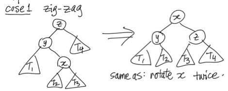
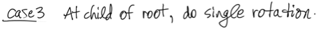
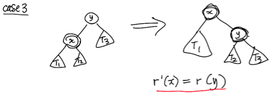
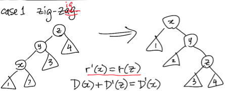
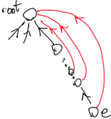
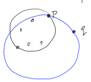
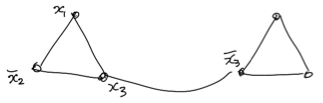
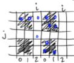
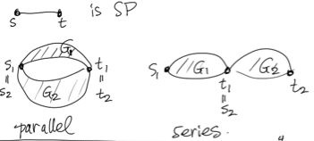

Introduction
In this course, we want to solve algorithmic problems, and compounding general knowledge with developments of the last 30 years. Though these notes are grouped by lecture, this course can be split into three sections:
Algorithmic Design
Assumed knowledge of greedy, divide & conquer, and dynamic programming techniques
Introduction to randomization, approximation, and online algorithmic techniques
Algorithmic Analysis
Assumed knowledge of big  , worst case asymptotic analysis techniques
, worst case asymptotic analysis techniques
Introduction to amortized analysis, probabilistic analysis, and approximation factors methods
Lower Bounds
The class website is https://www.student.cs.uwaterloo.ca/~cs466/.
TSP
Problem Statement
Given a graph ") with weights on edges
with weights on edges  , find a , which is a Hamiltonian Tour
, find a , which is a Hamiltonian Tour  that visits each vertex exactly once and has minimum weight:
that visits each vertex exactly once and has minimum weight:
")
Since we can add infinite-weight edges to any non-complete graph, we assume that we have a complete graph.
TSP is a known NP-completeproblem.
NP-complete
To show a problem  is NP-complete, we need to show that both:
is NP-complete, we need to show that both:
Prove is in NP.
Give a reduction (denoted “ ”) from a known NP-completeproblem to an instance of the problem.
”) from a known NP-completeproblem to an instance of the problem.
Thus to prove that TSP is NP-complete, we need to show both:
TSP is in NP
Hamiltonian Cycle TSP.
Assuming that Hamiltonian Cycle in our reduction is a known NP-completeproblem, we now know that TSP is NP-completetoo.
Unless  , we need to choose two of these three options:
, we need to choose two of these three options:
NP-completeproblems are hard, so we must choose between precision and speed when solving them.
Metric TSP
We define Metric TSP as a weaker variant of TSP where the distance between two vertexes is the same in either order, and distances always follows the triangle inequality.
 &= d(v, u) \\
d(u, v) &\le d(u, \beta) + d(\beta, v)
\end{aligned}")
There exists a fast approximation algorithm that exists for this problem:
Find minimum-spanning tree (see Chapter [cha:minimumspanningtrees] for more information) of the graph using Kruskal’s Algorithm (") ).
).
Take a tour walking around the tree, taking shortcuts to avoid re-visiting vertexes
The distance added by the shortcuts is less than or equal to twice the distance of remaining in the tree.
Here’s a quick proof to this lemma: In a given graph, call  the length of the tour of our algorithm, and call
the length of the tour of our algorithm, and call  the distance traveled in the minimal TSP tour.
the distance traveled in the minimal TSP tour.
We want to prove that  , so that this is a
, so that this is a  -approximation (For more information, see Chapter [cha:approximationalgorithms]).
-approximation (For more information, see Chapter [cha:approximationalgorithms]).
We know that  since deleting one edge of a minimum TSP tour gives us a spanning tree.
since deleting one edge of a minimum TSP tour gives us a spanning tree.
Sidenote: There exists a  approximation, but there were no specifics given in class. The apparently, the idea is to use a matching algorithm.
approximation, but there were no specifics given in class. The apparently, the idea is to use a matching algorithm.
Implementation
We must find a minimum spanning tree, which takes ") time using Prim and Kruskal’s Algorithm.
time using Prim and Kruskal’s Algorithm.

is the number of edges.

is the number of vertexes.
We will see improved heaps in this class that allow us to take the time down to ")
This method doesn’t work for General TSP, since if there exists a  -approximation, then
-approximation, then  .
.
Types of TSP
In general, the ordering is from hardest to easiest:
General TSP  Metric TSP Euclidean TSP
Metric TSP Euclidean TSP
- General
is the basic “general” TSP problem.
- Metric
is described above .
- Euclidean
is where vertexes are placed on a plane, and the weight of edges is the euclidean distance between vertexes .
Every algorithm must store, access, or search data. We look at amortized analysis and more complicated data structures these data structures.
It’s assumed knowledge of the following:
Binomial Heaps
Heaps
Heaps store are binary trees of elements, each with an numeric key. For a minimum heap, the minimum key is the root. Usually, we shape our heap as a near-perfect triangle, so we can store an array in level order and use indexing instead of pointers. The height of a heap is ") .
.
We have five main operations in priority queues:
- Insert
inserts at the bottom, and bubbles up -
- Delete Minimum
remove the root element, put the last item there, and bubble down. -
- Decrement Key
bubble the item up (or down) - ")
- Build
can be done faster than repeated insertion -
- Merge
merge two heaps into one heap -
Prim’s Algorithm
Prim’s Algorithm finds the Minimum Spanning Tree of a graph.
Start with one node  .
.
remaining = V
while |remaining| > 0:
e_connecting, v_connected = heap.popMin()
answer.put(e_connecting)
remaining.remove(v_connected)
heap.updateWeights(v_connected)
return answer
We define as the number of edges, and is the number of edges. ") .
.
We can implement this two ways.
If we store a heap of edges ordered by weight, this takes  = O((n+m) \log m)") time.
time.
If we store a heap of vertexes, this takes  \log n)") time.
time.
For now, these are the same. Once we implement different heaps, this difference becomes relevant.
Binomial Heap
We can improve the merge speed of our “standard” heaps by using pointers (where each node has any number of children) instead of an array to implement the heaps.
We keep the heap order, but we go beyond the fact that the heaps are made of trees.
Binomial Tree
We define binomial trees as follows:
The root of  is a single vertex with no children.
is a single vertex with no children.
The root of  is the root of a with an additional root vertex attached.
is the root of a with an additional root vertex attached.
The root of  is the root of a with an additional root vertex attached.
is the root of a with an additional root vertex attached.
The root of  is the root of a
is the root of a  tree with an additional root vertex as a child of the root vertex.
tree with an additional root vertex as a child of the root vertex.
 [fig:binomialheap]
[fig:binomialheap]
There are a few properties of Binomial Heaps we know about:
- Size
of a is  .
.
- Height
of a is , defined in the number of edges from the root to a leaf vertex.
- Width of level
 of a is
of a is ") .
.
This is since 
Binomial Heaps
To create binomial trees of arbitrary heights, we need to start using forests of binomial trees.
We can represent  elements as a , , and a
elements as a , , and a  .
.
In general, for elements, use  trees.
trees.
Most of our operations on this will be through a series of merges.
- Merge
works like binary addition (") ) across the trees, so the cost is the same as the bit cost of addition -
) across the trees, so the cost is the same as the bit cost of addition -
- Insert
is a merge of the pre-existing forest and a tree - worst-case
- Delete Minimum
is done by finding the smallest tree, breaking removing the root vertex, and merging those to the remaining untouched trees -
- Decrease Key
is done inside a binomial tree as a standard “bubble up”, so the effect is limited to the height of the individual -
- Build Binomial Heap
can be done by repeated insertion in ") time.
time.
Amortized Analysis
Example For Binomial Heaps
Binomial heaps take ") time to merge. Let’s prove that.
time to merge. Let’s prove that.
We want to determine the bit cost for incrementing a binary counter from  to .
to .
Worst-Case Analysis
The worst-case cost of one increment on a -bit counter is , so increments cost ") ( bits flipped times).
( bits flipped times).
Amortized Analysis
We can get a better bound.
The  bit flips every time -
bit flips every time -
The  bit flips every other time -
bit flips every other time - 
The  bit flips every 4th time -
bit flips every 4th time - 
etc.
The total cost is:

Thus, the average cost of incrementing a counter is  .
.
Since binomial heap appending is representable with a bit cost of a binary counter, the total cost for making a binomial heap is .
An Amortized Definition
Given a sequence of operations with total cost ") , then the amortized cost per operation is
, then the amortized cost per operation is }{m}") .
.
Potential Method for Amortized Analysis
The idea for this method is that we are keeping an account of (time) cost.
Keeping track of a “potential-time” bank account, we keep track of the amortized difference between true of operations and a expected for all operations.
We call the bank balance after the th operation  .
.
Cost is true.
Charge is artificial.
 - \text{cost}(i)
\end{aligned}")
Since the potential () and charge are artificial, we define them to make analysis easy.
It’s much simpler to define potential to get the charge:
 &= \text{cost}(i) + \Phi_i - \Phi_{i-1}
\end{aligned}")
If the final potential is than the initial potential, then the amortized cost is  max charge.
max charge.
![\begin{aligned}
\sum_{i=1}^m \text{charge}(i) &= \sum_{i=1}^m \text{cost}(i) + \sum_{i=1}^m \Phi_i - \sum_{i=0}^{m-1} \Phi_i \\
&= \sum_{i=1}^m \text{cost}(i) + \Phi_m - \Phi_0 \\
\Phi_m - \Phi_0 \ge0 &\implies \sum \text{charge}(i) \ge \sum \text{cost}(i) \\
\text{amortized cost} &= \sum \frac{\text{cost}(i)}{m} \\
&\le \sum \frac{\text{charge}(i)}{m} \\
&\le \text{max charge}
\end{aligned}](http://chart.apis.google.com/chart?cht=tx&chl=%5Cbegin%7Baligned%7D%0A%20%20%20%20%20%20%20%20%20%20%20%20%20%20%20%20%20%20%20%20%5Csum_%7Bi%3D1%7D%5Em%20%5Ctext%7Bcharge%7D%28i%29%20%26%3D%20%5Csum_%7Bi%3D1%7D%5Em%20%5Ctext%7Bcost%7D%28i%29%20%2B%20%5Csum_%7Bi%3D1%7D%5Em%20%5CPhi_i%20-%20%5Csum_%7Bi%3D0%7D%5E%7Bm-1%7D%20%5CPhi_i%20%5C%5C%0A%20%20%20%20%20%20%20%20%20%20%20%20%20%20%20%20%20%20%20%20%26%3D%20%5Csum_%7Bi%3D1%7D%5Em%20%5Ctext%7Bcost%7D%28i%29%20%2B%20%5CPhi_m%20-%20%5CPhi_0%20%5C%5C%0A%20%20%20%20%20%20%20%20%20%20%20%20%20%20%20%20%20%20%20%20%5CPhi_m%20-%20%5CPhi_0%20%5Cge0%20%26%5Cimplies%20%5Csum%20%5Ctext%7Bcharge%7D%28i%29%20%5Cge%20%5Csum%20%5Ctext%7Bcost%7D%28i%29%20%5C%5C%0A%20%20%20%20%20%20%20%20%20%20%20%20%20%20%20%20%20%20%20%20%5Ctext%7Bamortized%20cost%7D%20%26%3D%20%5Csum%20%5Cfrac%7B%5Ctext%7Bcost%7D%28i%29%7D%7Bm%7D%20%5C%5C%0A%20%20%20%20%20%20%20%20%20%20%20%20%20%20%20%20%20%20%20%20%26%5Cle%20%5Csum%20%5Cfrac%7B%5Ctext%7Bcharge%7D%28i%29%7D%7Bm%7D%20%5C%5C%0A%20%20%20%20%20%20%20%20%20%20%20%20%20%20%20%20%20%20%20%20%26%5Cle%20%5Ctext%7Bmax%20charge%7D%0A%20%20%20%20%20%20%20%20%20%20%20%20%20%20%20%20%5Cend%7Baligned%7D "\begin{aligned}
\sum_{i=1}^m \text{charge}(i) &= \sum_{i=1}^m \text{cost}(i) + \sum_{i=1}^m \Phi_i - \sum_{i=0}^{m-1} \Phi_i \\
&= \sum_{i=1}^m \text{cost}(i) + \Phi_m - \Phi_0 \\
\Phi_m - \Phi_0 \ge0 &\implies \sum \text{charge}(i) \ge \sum \text{cost}(i) \\
\text{amortized cost} &= \sum \frac{\text{cost}(i)}{m} \\
&\le \sum \frac{\text{charge}(i)}{m} \\
&\le \text{max charge}
\end{aligned}")
Potential Analysis in a Nutshell
We need to invent a ") and a
and a ") and prove that
and prove that  .
.
A goal when inventing potential and charge is to prove that max charge is small, since the amortized cost is less than or equal to the maximum charged.
 &= \text{cost}(i) + \Phi_i - \Phi_{i-1}
\end{aligned}")
Binary Counters Using the Potential Method
We know that only one bit will undergo  in a given increment.
in a given increment.
The cost is high when  occurs many times. Let’s pay for and an extra $1 for when this bit eventually flips .
occurs many times. Let’s pay for and an extra $1 for when this bit eventually flips .
Thus,  = 2") .
.
By theorem, the amortized cost max charge  , so long as .
, so long as .
Formally, we’d like to specify the relation between and .
We make a jump here that is the number of  s in the counter after the th operation.
s in the counter after the th operation.
Supposing the th operation changes  bits
bits  , and bit
, and bit  .
.
Then we have:
 &= t_i + 1 \\
\Phi_i &= \Phi_{i-1} - t_i + 1 \\
\text{charge}(i) &= \text{cost}(i) + \Phi_i - \Phi_{i-1} \\
&= t_i + 1 - t_i - 1 \\
&= 2
\end{aligned}")
Thus,  , and
, and  , so the theorem applies.
, so the theorem applies.
Mergeable Heaps
There’s a family of heaps who’s main operation is a merge.
[h]
l | c | c | c & Binomial Heap & Lazy Binomial Heap & Fibonacci Heap
insert & & ") &
&
delete min & & A & A
merge & & &
decrease key & & & A
build & & &
Lazy Binomial Heaps
We can improve merge an insert by lazily combining trees during insert and merge operations. We catch up on work when performing a delete min operation to have exactly one tree of each rank.
Implementing Delete-Min
Look at all roots to find the min
Delete that root, its children become separate
Consolidate ranks from smallest to largest
The wost case cost of delete min is , with singleton trees.
Amortized Analysis of Delete Min
We theorize that Lazy Binomial Heaps have A cost for delete min.
By magic, we pick  to represent the number of trees. Thus, , and , so .
to represent the number of trees. Thus, , and , so .
We know that  = \text{cost}(i) + \Phi_i - \Phi_{i-1}") . Let’s examine other operations costs first:
. Let’s examine other operations costs first:
Merge cost is , since the number of trees is the same.
Decrease key cost is , and the number of trees is the same.
Insert cost is , since the number of trees increase by one.
In the case of delete min, we have the degree ") of the node being deleted, and
of the node being deleted, and  as the number of trees being deleted.
as the number of trees being deleted.
Consolidate is called on  trees.
trees.
Thus the total cost is ") .
.
After consolidation, we have ") .
.
![\begin{aligned}
\text{amortized cost} &\le \text{max charge} \\
&\le \text{cost}(i) + \Phi_i - \Phi_{i-1} \\
&= t - 1 + r + O(\log n) - t \\
&\le r + O(\log n) \\
r \in O(\log n) &\implies \text{amortized cost} \in O(\log n)
\end{aligned}](http://chart.apis.google.com/chart?cht=tx&chl=%5Cbegin%7Baligned%7D%0A%20%20%20%20%20%20%20%20%20%20%20%20%20%20%20%20%20%20%20%20%20%20%20%20%20%20%20%20%5Ctext%7Bamortized%20cost%7D%20%26%5Cle%20%5Ctext%7Bmax%20charge%7D%20%5C%5C%0A%20%20%20%20%20%20%20%20%20%20%20%20%20%20%20%20%20%20%20%20%20%20%20%20%20%20%20%20%26%5Cle%20%5Ctext%7Bcost%7D%28i%29%20%2B%20%5CPhi_i%20-%20%5CPhi_%7Bi-1%7D%20%5C%5C%0A%20%20%20%20%20%20%20%20%20%20%20%20%20%20%20%20%20%20%20%20%20%20%20%20%20%20%20%20%26%3D%20t%20-%201%20%2B%20r%20%2B%20O%28%5Clog%20n%29%20-%20t%20%5C%5C%0A%20%20%20%20%20%20%20%20%20%20%20%20%20%20%20%20%20%20%20%20%20%20%20%20%20%20%20%20%26%5Cle%20r%20%2B%20O%28%5Clog%20n%29%20%5C%5C%0A%20%20%20%20%20%20%20%20%20%20%20%20%20%20%20%20%20%20%20%20%20%20%20%20%20%20%20%20r%20%5Cin%20O%28%5Clog%20n%29%20%26%5Cimplies%20%5Ctext%7Bamortized%20cost%7D%20%5Cin%20O%28%5Clog%20n%29%0A%20%20%20%20%20%20%20%20%20%20%20%20%20%20%20%20%20%20%20%20%20%20%20%20%5Cend%7Baligned%7D "\begin{aligned}
\text{amortized cost} &\le \text{max charge} \\
&\le \text{cost}(i) + \Phi_i - \Phi_{i-1} \\
&= t - 1 + r + O(\log n) - t \\
&\le r + O(\log n) \\
r \in O(\log n) &\implies \text{amortized cost} \in O(\log n)
\end{aligned}")
Thus delete min for lazy binomial heaps runs in worst case, but amortized.
Fibonacci Heaps
In these heaps, we want to improve the amortized cost of decrease key.
What if instead of bubbling up, we simply “cut off” the node being decreased (and its sub-tree) from its parents?
This is dangerous, since the number of trees increases, and the number of child nodes change (not just  ) for details.
) for details.
TODO: the notes in lecture 3 reference assignment 2 for a practical alternative to Fibonacci Heaps. Dig this up.
Splay Trees
In a nutshell, splay trees are self-adjusting data structures that alter data structure after each query. They’re the tree equivalent to lists that use https://en.wikipedia.org/wiki/Move-to-front_transform to improve lookup times.
Requisite Knowledge
Dictionaries
These use keys from a totally ordered universe. Operations include:
Unbalanced Binary Search Trees
All operations take ") , where
, where  is the height of the tree.
is the height of the tree.
Balanced Binary Search Tree
We limit ") . There are two (main) implementations: AVL and red-black trees. Both implementations must keep the balance information, and are re-balanced using rotations.
. There are two (main) implementations: AVL and red-black trees. Both implementations must keep the balance information, and are re-balanced using rotations.
Regarding Splay Trees
Splay trees were invented (discovered?) by Sleator and Tarjan in `85. They offer A cost per operation, with a worst case running time. By not keeping balance information, they become easier to implement than other conventional balanced trees.
The course notes allude to an example where single rotations do not give good average behavior, so we will do double rotations instead.
Splay Operation
The splay(x) operation moves  repeatedly to the root. This occurs through three cases. Refer to Figures [fig:splaytreescase1], [fig:splaytreescase2], and [fig:splaytreescase3].
repeatedly to the root. This occurs through three cases. Refer to Figures [fig:splaytreescase1], [fig:splaytreescase2], and [fig:splaytreescase3].
 [fig:splaytreescase1]
 [fig:splaytreescase2]
[fig:splaytreescase2]
 [fig:splaytreescase3]
Splay Tree Methods
- Search
- after finding , calling splay(x), even for unsuccessful searches.
- Insert
- usual binary search tree insert, then we splay the new node.
- Delete
- usual binary search tree delete, then splay the parent of the node being removed.
Amortized Analysis of Splay Trees
If the height of a tree is large, then search is expensive, and we pay out of potential.
We define ") as the number of descendants of , including , and
as the number of descendants of , including , and  = \log(D(x))") . Finally, we define
. Finally, we define  = \sum_x r(x)") . By magic, we have the max as
. By magic, we have the max as ) = O(n\log(n))") , and the min as
, and the min as ") .
.
For a single node, we call ") the current rank, and
the current rank, and ") the rank after calling
the rank after calling splay(x).
We claim that the amortized cost of one step of splay(x) is:
) &\le
\left\{
\begin{array}{lr}
3 (r'(x) - r(x)) :& \text{ for cases 1 and 2}\\
3 (r'(x) - r(x)) + 1 :& \text{ for case 3}
\end{array}
\right.
\end{aligned}")
Note that  - r'(x)) + (r'(x) - r(x)) = r''(x) - r(x)") .
.
Since  , we now want to find the amortized cost.
, we now want to find the amortized cost.
For case 3, refer to Figure [fig:splaytreesamortizedcase3].
 [fig:splaytreesamortizedcase3]
![\begin{aligned}
\text{amortized cost} &\le \text{charge} \\
&= \text{true cost} + \text{change in potential} \\
&= 1 + r'(x) + r'(y) - r(x) - r(y) \\
r'(x) = r(y) &\implies \text{amortized cost} = 1 + r'(y) - r(x) \\
&\le 1 + r'(x) - r(x) \\
&\le 1 + 3(r'(x) - r(x))
\end{aligned}](http://chart.apis.google.com/chart?cht=tx&chl=%5Cbegin%7Baligned%7D%0A%20%20%20%20%20%20%20%20%20%20%20%20%20%20%20%20%20%20%20%20%20%20%20%20%20%20%20%20%5Ctext%7Bamortized%20cost%7D%20%26%5Cle%20%5Ctext%7Bcharge%7D%20%5C%5C%0A%20%20%20%20%20%20%20%20%20%20%20%20%20%20%20%20%20%20%20%20%20%20%20%20%20%20%20%20%26%3D%20%5Ctext%7Btrue%20cost%7D%20%2B%20%5Ctext%7Bchange%20in%20potential%7D%20%5C%5C%0A%20%20%20%20%20%20%20%20%20%20%20%20%20%20%20%20%20%20%20%20%20%20%20%20%20%20%20%20%26%3D%201%20%2B%20r%27%28x%29%20%2B%20r%27%28y%29%20-%20r%28x%29%20-%20r%28y%29%20%5C%5C%0A%20%20%20%20%20%20%20%20%20%20%20%20%20%20%20%20%20%20%20%20%20%20%20%20%20%20%20%20r%27%28x%29%20%3D%20r%28y%29%20%26%5Cimplies%20%5Ctext%7Bamortized%20cost%7D%20%3D%201%20%2B%20r%27%28y%29%20-%20r%28x%29%20%5C%5C%0A%20%20%20%20%20%20%20%20%20%20%20%20%20%20%20%20%20%20%20%20%20%20%20%20%20%20%20%20%26%5Cle%201%20%2B%20r%27%28x%29%20-%20r%28x%29%20%5C%5C%0A%20%20%20%20%20%20%20%20%20%20%20%20%20%20%20%20%20%20%20%20%20%20%20%20%20%20%20%20%26%5Cle%201%20%2B%203%28r%27%28x%29%20-%20r%28x%29%29%0A%20%20%20%20%20%20%20%20%20%20%20%20%20%20%20%20%20%20%20%20%20%20%20%20%5Cend%7Baligned%7D "\begin{aligned}
\text{amortized cost} &\le \text{charge} \\
&= \text{true cost} + \text{change in potential} \\
&= 1 + r'(x) + r'(y) - r(x) - r(y) \\
r'(x) = r(y) &\implies \text{amortized cost} = 1 + r'(y) - r(x) \\
&\le 1 + r'(x) - r(x) \\
&\le 1 + 3(r'(x) - r(x))
\end{aligned}")
For case 1, refer to Figure [fig:splaytreesamortizedcase1].
 [fig:splaytreesamortizedcase1]
![\begin{aligned}
\text{amortized cost} &\le \text{true cost} + \text{change in potential} \\
&= 2 + (r'(x) + r'(y) + r'(z) - r(x) - r(y) - r(z)) \\
r'(x) = r(z) &\implies \text{amortized cost} \le 2 + r'(y) + r'(z) - r(x) - r(y) \\
r'(y) \le r'(x) \land -r(y) \le -r(x) &\implies \text{amortized cost} \le 2 + r'(x) + r'(z) - 2r(x)
\end{aligned}](http://chart.apis.google.com/chart?cht=tx&chl=%5Cbegin%7Baligned%7D%0A%20%20%20%20%20%20%20%20%20%20%20%20%20%20%20%20%20%20%20%20%20%20%20%20%20%20%20%20%5Ctext%7Bamortized%20cost%7D%20%26%5Cle%20%5Ctext%7Btrue%20cost%7D%20%2B%20%5Ctext%7Bchange%20in%20potential%7D%20%5C%5C%0A%20%20%20%20%20%20%20%20%20%20%20%20%20%20%20%20%20%20%20%20%20%20%20%20%20%20%20%20%26%3D%202%20%2B%20%28r%27%28x%29%20%2B%20r%27%28y%29%20%2B%20r%27%28z%29%20-%20r%28x%29%20-%20r%28y%29%20-%20r%28z%29%29%20%5C%5C%0A%20%20%20%20%20%20%20%20%20%20%20%20%20%20%20%20%20%20%20%20%20%20%20%20%20%20%20%20r%27%28x%29%20%3D%20r%28z%29%20%26%5Cimplies%20%5Ctext%7Bamortized%20cost%7D%20%5Cle%202%20%2B%20r%27%28y%29%20%2B%20r%27%28z%29%20-%20r%28x%29%20-%20r%28y%29%20%5C%5C%0A%20%20%20%20%20%20%20%20%20%20%20%20%20%20%20%20%20%20%20%20%20%20%20%20%20%20%20%20r%27%28y%29%20%5Cle%20r%27%28x%29%20%5Cland%20-r%28y%29%20%5Cle%20-r%28x%29%20%26%5Cimplies%20%5Ctext%7Bamortized%20cost%7D%20%5Cle%202%20%2B%20r%27%28x%29%20%2B%20r%27%28z%29%20-%202r%28x%29%0A%20%20%20%20%20%20%20%20%20%20%20%20%20%20%20%20%20%20%20%20%20%20%20%20%5Cend%7Baligned%7D "\begin{aligned}
\text{amortized cost} &\le \text{true cost} + \text{change in potential} \\
&= 2 + (r'(x) + r'(y) + r'(z) - r(x) - r(y) - r(z)) \\
r'(x) = r(z) &\implies \text{amortized cost} \le 2 + r'(y) + r'(z) - r(x) - r(y) \\
r'(y) \le r'(x) \land -r(y) \le -r(x) &\implies \text{amortized cost} \le 2 + r'(x) + r'(z) - 2r(x)
\end{aligned}")
To show that  + r'(z) - 2r(x) \le 3(r'(x) - r(x))") , it is enough to show that
, it is enough to show that  - r(x) - r'(z)") .
.
![\begin{aligned}
\forall x, y > 0 \land x+y \le 1 &: \text{Range}(\log x + \log y) = (-\infty, -2] \\
\implies \forall a + b \le c &\to \log{\left(\frac{a}{c}\right)} + \log{\left(\frac{b}{c}\right)} \le -2 \\
D(x) + D'(z) \le D'(x) &\implies \log(D(x)+ \log(D'(z)) \le 2 \log(D'(x)) - 2 \\
r(x) + r'(z) &\le 2r'(x) - 2 \\
2 &\le 2r'(x) - r(x) - r'(z)
\end{aligned}](http://chart.apis.google.com/chart?cht=tx&chl=%5Cbegin%7Baligned%7D%0A%20%20%20%20%20%20%20%20%20%20%20%20%20%20%20%20%20%20%20%20%20%20%20%20%20%20%20%20%5Cforall%20x%2C%20y%20%3E%200%20%5Cland%20x%2By%20%5Cle%201%20%26%3A%20%5Ctext%7BRange%7D%28%5Clog%20x%20%2B%20%5Clog%20y%29%20%3D%20%28-%5Cinfty%2C%20-2%5D%20%5C%5C%0A%20%20%20%20%20%20%20%20%20%20%20%20%20%20%20%20%20%20%20%20%20%20%20%20%20%20%20%20%5Cimplies%20%5Cforall%20a%20%2B%20b%20%5Cle%20c%20%26%5Cto%20%5Clog%7B%5Cleft%28%5Cfrac%7Ba%7D%7Bc%7D%5Cright%29%7D%20%2B%20%5Clog%7B%5Cleft%28%5Cfrac%7Bb%7D%7Bc%7D%5Cright%29%7D%20%5Cle%20-2%20%5C%5C%0A%20%20%20%20%20%20%20%20%20%20%20%20%20%20%20%20%20%20%20%20%20%20%20%20%20%20%20%20D%28x%29%20%2B%20D%27%28z%29%20%5Cle%20D%27%28x%29%20%26%5Cimplies%20%5Clog%28D%28x%29%2B%20%5Clog%28D%27%28z%29%29%20%5Cle%202%20%5Clog%28D%27%28x%29%29%20-%202%20%5C%5C%0A%20%20%20%20%20%20%20%20%20%20%20%20%20%20%20%20%20%20%20%20%20%20%20%20%20%20%20%20r%28x%29%20%2B%20r%27%28z%29%20%26%5Cle%202r%27%28x%29%20-%202%20%5C%5C%0A%20%20%20%20%20%20%20%20%20%20%20%20%20%20%20%20%20%20%20%20%20%20%20%20%20%20%20%202%20%26%5Cle%202r%27%28x%29%20-%20r%28x%29%20-%20r%27%28z%29%0A%20%20%20%20%20%20%20%20%20%20%20%20%20%20%20%20%20%20%20%20%20%20%20%20%5Cend%7Baligned%7D "\begin{aligned}
\forall x, y > 0 \land x+y \le 1 &: \text{Range}(\log x + \log y) = (-\infty, -2] \\
\implies \forall a + b \le c &\to \log{\left(\frac{a}{c}\right)} + \log{\left(\frac{b}{c}\right)} \le -2 \\
D(x) + D'(z) \le D'(x) &\implies \log(D(x)+ \log(D'(z)) \le 2 \log(D'(x)) - 2 \\
r(x) + r'(z) &\le 2r'(x) - 2 \\
2 &\le 2r'(x) - r(x) - r'(z)
\end{aligned}")
Thus the amortized cost of case 1 is  - r(x))") .
.
Case 2 is incredibly similar to case 1 with minor (ordering) modifications.
Without proof, we claim that a tree  root
root  and node , the amortized cost of
and node , the amortized cost of splay(x) is:
 &\le 3(r(t) - r(x)) + 1 \\
&\in O(\log{\frac{D(t)}{D(x)}}) \\
&= O(\log n)
\end{aligned}")
Let ") after the th step of the splay. So
after the th step of the splay. So ") , and
, and ") (where is the final step). Thus the overall amortized cost of splay is:
(where is the final step). Thus the overall amortized cost of splay is:
 &= 1 + \sum_{i=1}^{k} 3(r_i - r_{i-1}) \\
&= 3(r_k - r_0) + 1
\end{aligned}")
We know that the cost of walking down the tree in each operation is the cost of the ensuing splay. Thus, we know the amortized cost of insert, search, and delete in a splay tree is .
We briefly touched in class that insert and delete both modify potential, but this is still covered by the work to walk to the inserted and deleted value.
Union-Find Problem
Connected components in a graph are essentially the components where two can reach each other.
We want to find all connected components, and identify which component a given vertex is in. Let’s make this efficient.
In general, we assume we are given a graph  with vertexes and edges. We then need to respond to two queries:
with vertexes and edges. We then need to respond to two queries:
- find
are vertexes  and
and  in the same component?
in the same component?
- union
connect the components which vertexes  and
and  lie in.
lie in.
Using depth-first search, it takes ") time to perform
time to perform find, and time to perform union.
Dynamic Graph Connectivity
For many data structures, we can get much faster runtime by maintaining (and later updating) results as the underlying data changes.
Examples of where this is useful:
Union-Find Data Structure
We want to maintain a collection of disjoint sets then evaluate:
- Union
")
unites (modifies) the two sets  and
and  to be in the same set.
to be in the same set.
- Find
")
which set contains  ?
?
If we analyze Kruskal’s algorithm using union-find data structure, we get:

Sort takes  = O(m \log n)") time, so we want the finds and unions to work in
time, so we want the finds and unions to work in ") to have a speedy algorithm.
to have a speedy algorithm.
Define as the number of elements, and as the number of operations. For all implementations, the number of unions  .
.
Implementation With an Array
Using an array ![S[1...n]](http://chart.apis.google.com/chart?cht=tx&chl=S%5B1...n%5D "S[1...n]") , where
, where ![S[i]](http://chart.apis.google.com/chart?cht=tx&chl=S%5Bi%5D "S[i]") contains the name of a set containing .
contains the name of a set containing .
- Find
- Union
worst case
To make this marginally faster, we can maintain a set for each set as well. Thus, union(A, B) will update  for the smaller set. Since each element changes its set name
for the smaller set. Since each element changes its set name  times, the overall cost of all unions is
times, the overall cost of all unions is ") .
.
The cost of operations is thus . With this implementation, this is the best possible if the number of finds is ") .
.
Thus in this case, we get  \log n)") for Kruskal’s algorithm.
for Kruskal’s algorithm.
A Better Implementation
In the case that the number of finds is small, the array-based union-find implementation is horrible.
When we represent each set as a tree, life becomes much better.
- Union
is implemented as merging the smaller tree as a child to the root of the larger tree. See Figure [fig:unionfindunion] for a pictorial visualization.
- Find
is implemented by traversing up the tree from the node, then returning the name of the root node. After traversing upwards, we perform path compression by setting the parent of all vertexes in the path to be the root of this tree. See Figure [fig:unionfindfind] for a pictorial visualization.
 [fig:unionfindunion]
[fig:unionfindunion]
 [fig:unionfindfind]
We determine the smaller tree by keeping track of the “rank” of a tree - the height if there was no path compression. When union-ing a smaller  onto a larger
onto a larger  , the the new rank is
, the the new rank is  .
.
Analysis of the Union-Find Data Structure
The implementation is simple, but the analysis is hard. In `75, Tarjan proved that the cost of operations is )") time.
time.
We will prove the slightly higher bound of ") time for operations.
time for operations.
We know that the cost of find(v) is the same as the distance from  to the root. In a nutshell, we will charge some to the
to the root. In a nutshell, we will charge some to the find, and some to the nodes along the path from to the root, then sum it up.
We claim (without proof) that:
 < \text{rank}(\text{parent}(v))") .
.
The number of vertexes of rank  is
is  in size.
in size.
In our analysis, we divide vertexes into groups based on their rank. A vertex of rank goes in a group number ") . Thus a group
. Thus a group  contain the ranks
contain the ranks  + 1, 2\uparrow(g-1) + 2, \ldots, 2\uparrow g") . For group , the number different ranks
. For group , the number different ranks +1") in is
in is  .
.
Since the largest rank in a structures can be , the number of groups must be  .
.
We want to find the charge for find(v): For each vertex  on the path from to the root:
on the path from to the root:
Thus the total charge to  (v)
(v) , since the group changes
, since the group changes  times, and more for the root and it’s child.
times, and more for the root and it’s child.
We now need to determine the charge to individual nodes.
If a vertex in group is charged, then path compression will give it a new parent of higher rank. Therefore a in group is charged ") times until its parent is in a higher group. We know that
times until its parent is in a higher group. We know that  \le 2 \uparrow g") .
.
The total charge to all nodes in a group is:
(\text{number of nodes in $g$}) &= c(g)N(g) \\
N(g) &\le \sum_{r = 2\uparrow(g-1)+1}^{2 \uparrow g} \frac{n}{2^r} \\
&\le \frac{n}{2^{2 \uparrow(g-1)+1}} \sum_{i=0}^\infty \frac{1}{2^i} \\
&\le \frac{n}{2 \uparrow g} \\
\implies c(g)N(g) &\le n
\end{aligned}")
Thus the total charge to all nodes is  .
.
For Kruskal’s algorithm, we find the total charge to finds and nodes as:
 + n \log^* n) &= O(m \log^* n)
\end{aligned}")
Not bad.
Geometric Data Structures
So far data structures have been implemented with comparable keys.
When working in higher dimensions, we have two main problem types:
Range Search
By preprocessing points in dimensions, so we can handle range queries. In 2D, this would be querying for points contained within a rectangle.
We have 3 main measures for range search methods:
- P
the preprocessing time
- S
the space taken for preprocessing
- Q
the query time
- U
the update time (only some algorithms can have updated data)
Range Queries for 
When , we sort data and use binary searches. Thus we have:
- P
- S
- Q
") , where is the output size.
, where is the output size.
- U
Range Queries for 
We have a few cool implementations, most of which are covered in CS240.
Quad Tree
Divide squares into four subsquares, repeat until each square has ") points.
points.
d-Tree
Divide points in half vertically then horizontally (then recurse).
- P
- S
- Q
") , where is the output size.
, where is the output size.
Range Trees
See the subsection on Range trees below.
Range Trees for
A th dimension range tree improves  at the expense of . It uses a binary search tree across one dimension, where each internal node has an additional
at the expense of . It uses a binary search tree across one dimension, where each internal node has an additional  -dimension range tree.
-dimension range tree.
A -dimension range tree is a sorted list.
- P
sort by , then sort by  and do some work -
and do some work -
- S
each point occurs in of the sorted-by- lists -
- Q
search for the  and
and  in time. For all children of paths to and , we search the list -
in time. For all children of paths to and , we search the list - ")
Fractional Cascading
We can improve to by using a technique called fractional cascading.
Generally, we keep a pointer from each element in the ’s list to the corresponding element in ’s list. This gives us ") , since we binary search for
, since we binary search for  in the list of root and follow pointers.
in the list of root and follow pointers.
Point Location
Given a set of disjoint regions in a -dimensional space, we want to quickly respond to queries that query the location they are in. This can help with queries like: which city is coordinate ") in? Where is the nearest Tim Hortons? etc.
in? Where is the nearest Tim Hortons? etc.
Point Location for Dimension
In d, we use a balanced binary search tree.
- P
- S
- Q
Point Location for dimensions
We can divide the entire space into slabs by adding a vertical line at every point.
Then given a query point , find the correct slab () then binary search by ().
- Q
- S
") (ew)
(ew)
Less Space Through Persistent Data Structures
Given that in one slab to the next, very few changes, we only need to make a BST for the leftmost slab and update for subsequent slabs.
The total number of updates to the BST is , since every segment is inserted and deleted exactly once.
If we update a BST and search it in the past, this idea is called a “persistent data structure”.
- Partial persistence
allows queries in the past and only the present be changed.
- Full persistence
allows queries and changes at any point in time.
Using Driscoll, …, Tarjan `89, we can add partial persistence to any data structure.
This gives us a planar point location of:
- P
- S
- Q
In an awesome way, this runs in the same time as the initial 1D problem.
Randomized Algorithms
Algorithms that use random numbers have their and/or their depend on random numbers. This forces us to use amortized (expected) analysis.
Practicaly speaking, it gets us easier and faster algorithms. Theoretically speaking, it’s openwhether randomization helps for Pvs NP, but we’ll see an example where it’ll help a tiny bit.
In previous classes, we’ve seen QuickSort and SkipLists.
We define randomized algorithms as ones that execute either method rand[1, ..., n] or rand[0, 1], both of which run in time.
Thus, the running time for fixed input depends on random numbers - i.e. a .
A few definitions are necessary:
- Sample Space
is the space of all possible outcomes (for fixed input).
- Random Variables
map the sample space to real numbers (at runtime).
We need to rely on some stats for the upcoming parts. See Section [sec:expectedvaluesstatistics] for expected knowledge.
We set the function ") as the time it takes depending on the random variable
as the time it takes depending on the random variable  . Obviously, we set
. Obviously, we set )") as the expected runtime across all possible values of .
as the expected runtime across all possible values of .
We then say that the function") is the maximum of across all ’s.
is the maximum of across all ’s.
 &= \max_{|I| = n} E(T(I))
\end{aligned}")
Selection
Given a set of numbers , we’d like to return the -th smallest element of .
For example:
 is the min
is the min
 is the 2nd min
is the 2nd min
 is the max
is the max
 is the median
is the median
Let’s implement QuickSelect:
def QuickSelect(S, k):
n = |S|
if n < constant
Sort(S)
return kth element
i = rand(1...n)
partion S into:
L = {s : s < S[i]}
M = {s : s == S[i]}
R = {s : s > S[i]}
if k < |L| return QuickSelect(L, k)
if k <= |L| + m return s[i]
return QuickSelect(B, k - (|L| + |M|))
This is worst-case ") when pivot is always the min or the max, but it often isn’t the worst-case.
when pivot is always the min or the max, but it often isn’t the worst-case.
We can do more detailed analysis to find the expected time of finding it on a set of size .
In other words, we want )") , where is a random variable runtime of QuickSelect on a set of size .
, where is a random variable runtime of QuickSelect on a set of size .
We have recursive calls on sets of size or  . For an upper bound, assume that lies in the larger (worse) half of the recursion. In other words, we assume that
. For an upper bound, assume that lies in the larger (worse) half of the recursion. In other words, we assume that  or
or  . Thus the recursion is
. Thus the recursion is ") .
.
Assuming that  \le T(j)") for
for  , we get:
, we get:
) &\le \frac{1}{2}E\left(T\left(\frac{3n}{4}\right)\right) + \frac{1}{2}E\left(T\left(n - 1\right)\right) + O(n) \\
f\left(n\right) &\le \frac{1}{2}f\left(\frac{3n}{4}\right) + \frac{1}{2}f\left(n - 1\right) + O(n)
\end{aligned}")
We can prove by induction that  = O(n)") .
.
Random V.S. Non-Randomized Algorithms
1960 Hoare QuickSelect has ") expected comparisons
expected comparisons
1973 BFPRT created a non-randomized selection in time, with ") comparisons. This is the same with respect to , but different constant than randomized algorithms.
comparisons. This is the same with respect to , but different constant than randomized algorithms.
1975 Floyd Rivest created a randomized algorithm that takes ") expected comparisons.
expected comparisons.
1989 Munro & Cunto proved that any ralgorithm takes at least  expected comparisons.
expected comparisons.
1985 [???] proved a lower bound of  comparisons for non-randomized algorithms. Randomization probably helps.
comparisons for non-randomized algorithms. Randomization probably helps.
Currently, our best non-randomized bounds are:
[h]
| Upper Bound |
1999 |
2.95n |
| Lower Bound |
2001 |
 n") , ,  |
Theorem: Finding the median of elements takes  comparisons in the worst case.
comparisons in the worst case.
Proof:
Let  , and
, and  . So that each set has
. So that each set has  elements.
elements.
We claim that the number of  vs
vs  comparisons must be
comparisons must be  in the worst case.
in the worst case.
We set it up so the adversary answers the comparisons that our algorithm queries. Our adversary consistently answers by “setting” elements to and at all times. We can now create an adversary strategy:
def compare(x, y):
if x and y have been seen before:
return result of comparison
if one of (x, y) have been seen:
put the unseen one in the other set
if neither are set:
put x in L, y in H
An adversary must stop when  = \frac{n-1}{2}") , so they can force at most comparisons.
, so they can force at most comparisons.
Since there are always  vs comparisons, and the adversary can force an additional vs comparisons, the overall algorithm must make comparisons in the worst case.
vs comparisons, and the adversary can force an additional vs comparisons, the overall algorithm must make comparisons in the worst case.
Non-Randomized Selection Algorithm
The idea here is that we divide sets of elements into groups of 5, then find the median of each group. We then execute a recursive call to find a median of medians  . This guarantees between
. This guarantees between  and
and  in rank. We get the recurrence:
in rank. We get the recurrence:
 &= T\left(\frac{n}{5}\right) + T\left(\frac{7n}{10}\right) + O(n)
\end{aligned}")
We can prove that  = O(n)") .
.
For more information, look up the “median of medians” algorithm online.
Primality Testing
Randomized Algorithm Types
There are two kinds of randomized algorithms:
Las Vegas Type Algorithms
Las Vegas algorithms always return the correct output, and have good expected runtime. An example of this type of algorithm is quicksort.
We can convert Las Vegas to Monte Carlo algorithms by stopping after some time and outputting a junk answer.
Monte Carlo Type Algorithms
Monte Carlo algorithms are quick with a high probability of success, and have a good guaranteed runtime.
If we have a fast correctness test we can convert Monte Carlo algorithms to Las Vegas algorithms, repeating the algorithm if output isn’t correct.
Primality Testing Using a Monte Carlo Algorithm
Given an odd number , is composite? Phrased this way, we have a decision problem in NP, which is verifying YES answers.
It is important to know that while the input is , the input size is ") – the number of bits used expressing . Thus trial division (
– the number of bits used expressing . Thus trial division (") time) is not poly-time.
time) is not poly-time.
We use the following theorem to help us with our solutions:
Fermat’s Little Theorem
If  is prime, then
is prime, then  :
:  .
.
We can prove this by showing:
! \equiv (p-1)! \mod p \\
a^p \equiv 1 \mod p
\end{aligned}")
The contrapositive states that whenever  doesn’t hold for
doesn’t hold for  , then is a Fermat Witness to being composite.
, then is a Fermat Witness to being composite.
Prime-Testing
The idea is to test being composite using randomly-generated in ![[1, \ldots, n-1]](http://chart.apis.google.com/chart?cht=tx&chl=%5B1%2C%20%5Cldots%2C%20n-1%5D "[1, \ldots, n-1]") for being a Fermat witness.
for being a Fermat witness.
If it is, then yes is composite. If it isn’t, then maybe is prime.
The bad news is that there are composite numbers Fermat witnesses.
Where  (for an odd ), we need a that is prime. We define
(for an odd ), we need a that is prime. We define ![a \in [1, n-1]](http://chart.apis.google.com/chart?cht=tx&chl=a%20%5Cin%20%5B1%2C%20n-1%5D "a \in [1, n-1]") as a strong witness of being composite if for some
as a strong witness of being composite if for some  ,
,  :
:

In CLRS, they prove that if is prime, there are no strong witnesses; they also prove that if is composite, there are strong witnesses.
Implementation
witness (a , n):
u = n - 1 % 2
t = log((n - 1) / u) // base 2
x[0] = a ^ u mod n
for i = 1 ... t:
x[i] = x[i-1]^2 mod n
if (x[i] == 1 and x[i-1] != 1 and x[i-1] != n - 1):
return true // a is a strong witness to n being composite
return x[t] != 1 // a is a Fermat witness to n being composite
The runtime of this algorithm is polynomial in .
Miller-Rabin Algorithm
The idea of this algorithm is to test  times that random numbers aren’t witnesses to being composite.
times that random numbers aren’t witnesses to being composite.
isComposite(n):
for i = 1 ... s:
x = rand(1...n-1)
if (witness(x, n)):
return YES // n is composite
return MAYBE // n is prime
If is prime, the algorithm is always correct. IF is composite however, we can tabulate the probability it is unsure:

This is a Monte-Carlo algorithm with a .
Complexity Classes
We can define a number of decision classes:
- P
are the decision problems solvable in polynomial time. These are also known as the class of languages accepted in polynomial time.
- NP
are the class of languages accepted in non-deterministic polynomial time. These are also known as the decision problems that can be in polynomial time.
There are a few openproblems about this:
![\begin{aligned}
{\textsc{NP}\xspace}&\stackrel{?}{=} \textsc{co-np} \\
{\textsc{P}\xspace}&\stackrel{?}{=} {\textsc{NP}\xspace}\\
{\textsc{P}\xspace}&\stackrel{?}{=} {\textsc{NP}\xspace}\cup \textsc{co-np} \\
{\textsc{P}\xspace}&\stackrel{?}{=} \textsc{rp} \\
\textsc{rp} &\stackrel{?}{=} {\textsc{NP}\xspace}\end{aligned}](http://chart.apis.google.com/chart?cht=tx&chl=%5Cbegin%7Baligned%7D%0A%20%20%20%20%20%20%20%20%20%20%20%20%20%20%20%20%20%20%20%20%7B%5Ctextsc%7BNP%7D%5Cxspace%7D%26%5Cstackrel%7B%3F%7D%7B%3D%7D%20%5Ctextsc%7Bco-np%7D%20%5C%5C%0A%20%20%20%20%20%20%20%20%20%20%20%20%20%20%20%20%20%20%20%20%7B%5Ctextsc%7BP%7D%5Cxspace%7D%26%5Cstackrel%7B%3F%7D%7B%3D%7D%20%7B%5Ctextsc%7BNP%7D%5Cxspace%7D%5C%5C%0A%20%20%20%20%20%20%20%20%20%20%20%20%20%20%20%20%20%20%20%20%7B%5Ctextsc%7BP%7D%5Cxspace%7D%26%5Cstackrel%7B%3F%7D%7B%3D%7D%20%7B%5Ctextsc%7BNP%7D%5Cxspace%7D%5Ccup%20%5Ctextsc%7Bco-np%7D%20%5C%5C%0A%20%20%20%20%20%20%20%20%20%20%20%20%20%20%20%20%20%20%20%20%7B%5Ctextsc%7BP%7D%5Cxspace%7D%26%5Cstackrel%7B%3F%7D%7B%3D%7D%20%5Ctextsc%7Brp%7D%20%5C%5C%0A%20%20%20%20%20%20%20%20%20%20%20%20%20%20%20%20%20%20%20%20%5Ctextsc%7Brp%7D%20%26%5Cstackrel%7B%3F%7D%7B%3D%7D%20%7B%5Ctextsc%7BNP%7D%5Cxspace%7D%5Cend%7Baligned%7D "\begin{aligned}
{\textsc{NP}\xspace}&\stackrel{?}{=} \textsc{co-np} \\
{\textsc{P}\xspace}&\stackrel{?}{=} {\textsc{NP}\xspace}\\
{\textsc{P}\xspace}&\stackrel{?}{=} {\textsc{NP}\xspace}\cup \textsc{co-np} \\
{\textsc{P}\xspace}&\stackrel{?}{=} \textsc{rp} \\
\textsc{rp} &\stackrel{?}{=} {\textsc{NP}\xspace}\end{aligned}")
Randomized Polynomial Time, One Sided Monte-Carlo
The rp class of problems is the class of languages that have a randomized algorithm running in worst-case polynomial time such that for any input :
![\begin{aligned}
x \in L \implies Pr[\text{$A(x)$ accepts}] & \ge \frac{1}{2} \\
x \not \in L \implies Pr[\text{$A(x)$ accepts}] & = 0
\end{aligned}](http://chart.apis.google.com/chart?cht=tx&chl=%5Cbegin%7Baligned%7D%0A%20%20%20%20%20%20%20%20%20%20%20%20%20%20%20%20%20%20%20%20%20%20%20%20x%20%5Cin%20L%20%5Cimplies%20Pr%5B%5Ctext%7B%24A%28x%29%24%20accepts%7D%5D%20%26%20%5Cge%20%5Cfrac%7B1%7D%7B2%7D%20%5C%5C%0A%20%20%20%20%20%20%20%20%20%20%20%20%20%20%20%20%20%20%20%20%20%20%20%20x%20%5Cnot%20%5Cin%20L%20%5Cimplies%20Pr%5B%5Ctext%7B%24A%28x%29%24%20accepts%7D%5D%20%26%20%3D%200%0A%20%20%20%20%20%20%20%20%20%20%20%20%20%20%20%20%20%20%20%20%5Cend%7Baligned%7D "\begin{aligned}
x \in L \implies Pr[\text{$A(x)$ accepts}] & \ge \frac{1}{2} \\
x \not \in L \implies Pr[\text{$A(x)$ accepts}] & = 0
\end{aligned}")
In other words, the algorithm always returns no for input that don’t match, and sometimes returns yes for that match .
We know that  , since the probabilities that Pproblems will accept and decline are 0 and 1 respectively.
, since the probabilities that Pproblems will accept and decline are 0 and 1 respectively.
Supposing language is in rp, i.e. there is a randomized algorithm that fits the definitions of rp. depends on and random choices. If we think of the random choices as a string of random bits, we write ") as applying on with random bits . Since runs in polynomial with respect to
as applying on with random bits . Since runs in polynomial with respect to  (
(") ), we know that the string
), we know that the string ") . Using as the verification algorithm and as the certificate, we can show that is in NP.
. Using as the verification algorithm and as the certificate, we can show that is in NP.
Zero Error Probabilistic Polynomial Time
zpp is the class of languages accepted by Las Vegas algorithms with an expected polynomial runtime.
Note that  .
.
An in-class quiz consisted in proving that  is true.
is true.
See here for more details on the co-rp complexity class.
Open Questions
It is openif these containments are proper, or if they can be made more precise:

Finger-Printing - Pattern Matching and Polynomial Identities
String Equality
It’s pretty expensive to compare strings, especially if they’re long, stored in separate locations, etc. We compare a smaller fingerprint where is an -bit binary number ( ). For a randomly chosen
). For a randomly chosen  , we can set:
, we can set:
 &= x \mod p
\end{aligned}")
While  implies
implies  = H_p(y)") , this contrapositive doesn’t hold true if divides
, this contrapositive doesn’t hold true if divides  .
.
With repeated (in)equality testing of ") to
to ") , we can build confidence about
, we can build confidence about  . Our algorithm will know for sure when
. Our algorithm will know for sure when  , but it can’t be sure they are equal. Thus this is a Monte-Carlo Algorithm.
, but it can’t be sure they are equal. Thus this is a Monte-Carlo Algorithm.
To better analyze our algorithm, we want to define  . If we define
. If we define ") as the number of primes less than , then
as the number of primes less than , then  \approx \frac{n}{\ln n}") . Another result from number theory dictates that the number of prime divisors of
. Another result from number theory dictates that the number of prime divisors of  is .
is .
} \\
&= \frac{\pi(n)}{\pi(M)}
\end{aligned}")
If we pick  , then we have :
, then we have :

Pattern Matching
We can use a similar idea as string matching for pattern matching:
Given a test string and a pattern string (where  ,
,  ), does appear as a substring of ?
), does appear as a substring of ?
There’s a straightforward ") solution.
solution.
Rabin-Karp Algorithm
Rabin-Karp supplies a simple and efficient randomized algorithm.
Suppose and are binary strings. We want to compare the fingerprint of to fingerprints of successive substrings of .
Using a “rolling hash”, these fingerprints in can be computed very efficiently.
def hasMatch(text T, text P):
p = randomPrime(1 ... m)
compute Hp(P)
compute Hp(T[1 ... m])
for i in range(1 ... n-m+1):
if Hp(P) == Hp(T[i ... i+m-1])
return PROBABLE_MATCH
output NO_MATCH
We have the runtime of ") arithmetic operations. We are more concerned about the failure rate - the probability that we output Probable_Match without there being a real match. Iff divides
arithmetic operations. We are more concerned about the failure rate - the probability that we output Probable_Match without there being a real match. Iff divides ![|P - T[i \ldots i+m -1]|](http://chart.apis.google.com/chart?cht=tx&chl=%7CP%20-%20T%5Bi%20%5Cldots%20i%2Bm%20-1%5D%7C "|P - T[i \ldots i+m -1]|") for some , then divides
for some , then divides ![\Pi_i |P - T[i \ldots i+m - 1] \le 2^{nm}](http://chart.apis.google.com/chart?cht=tx&chl=%5CPi_i%20%7CP%20-%20T%5Bi%20%5Cldots%20i%2Bm%20-%201%5D%20%5Cle%202%5E%7Bnm%7D "\Pi_i |P - T[i \ldots i+m - 1] \le 2^{nm}") .
.
Thus, the following of failure is: (and to recap...)
![\begin{aligned}
& \text{$p$ divides } |P - T[i \ldots i + m - 1] \text{ for some $i$} \\
\implies & \text{$p$ divides } \Pi_i |P - T[i \ldots i + m - 1]| \le 2^{nm} \\
\implies & Pr\{ \text{failure} \} \le \frac{\pi(nm)}{\pi(M)}
\end{aligned}](http://chart.apis.google.com/chart?cht=tx&chl=%5Cbegin%7Baligned%7D%0A%20%20%20%20%20%20%20%20%20%20%20%20%20%20%20%20%20%20%20%20%20%20%20%20%26%20%5Ctext%7B%24p%24%20divides%20%7D%20%7CP%20-%20T%5Bi%20%5Cldots%20i%20%2B%20m%20-%201%5D%20%5Ctext%7B%20for%20some%20%24i%24%7D%20%5C%5C%0A%20%20%20%20%20%20%20%20%20%20%20%20%20%20%20%20%20%20%20%20%20%20%20%20%5Cimplies%20%26%20%5Ctext%7B%24p%24%20divides%20%7D%20%5CPi_i%20%7CP%20-%20T%5Bi%20%5Cldots%20i%20%2B%20m%20-%201%5D%7C%20%5Cle%202%5E%7Bnm%7D%20%5C%5C%0A%20%20%20%20%20%20%20%20%20%20%20%20%20%20%20%20%20%20%20%20%20%20%20%20%5Cimplies%20%26%20Pr%5C%7B%20%5Ctext%7Bfailure%7D%20%5C%7D%20%5Cle%20%5Cfrac%7B%5Cpi%28nm%29%7D%7B%5Cpi%28M%29%7D%0A%20%20%20%20%20%20%20%20%20%20%20%20%20%20%20%20%20%20%20%20%5Cend%7Baligned%7D "\begin{aligned}
& \text{$p$ divides } |P - T[i \ldots i + m - 1] \text{ for some $i$} \\
\implies & \text{$p$ divides } \Pi_i |P - T[i \ldots i + m - 1]| \le 2^{nm} \\
\implies & Pr\{ \text{failure} \} \le \frac{\pi(nm)}{\pi(M)}
\end{aligned}")
Where  is some number. We can choose
is some number. We can choose  , then we have:
, then we have:
} \frac{\ln(n^2 m)}{n^2 m} \\
&< \frac{2}{n}
\end{aligned}")
i.e. if  and
and  , then
, then  . We can use a
. We can use a  -bit fingerprint prime, and the
-bit fingerprint prime, and the  .
.
In practice this is slower than Boyer-Moore, but it’s better when you need to test multiple patterns in one string.
Verifying Polynomial Identities
Given a Vandermonde matrix :
![\begin{aligned}
M &=
\left[
\begin{array}{ccccc}
1 & x_1 & x_1^2 & \ldots & x_1 ^{n-1} \\
\vdots & \vdots & \vdots & \vdots & \vdots \\
1 & x_n & x_n^2 & \ldots & x_n ^{n-1}
\end{array}
\right]
\end{aligned}](http://chart.apis.google.com/chart?cht=tx&chl=%5Cbegin%7Baligned%7D%0A%20%20%20%20%20%20%20%20%20%20%20%20%20%20%20%20%20%20%20%20M%20%26%3D%0A%20%20%20%20%20%20%20%20%20%20%20%20%20%20%20%20%20%20%20%20%5Cleft%5B%0A%20%20%20%20%20%20%20%20%20%20%20%20%20%20%20%20%20%20%20%20%20%20%20%20%5Cbegin%7Barray%7D%7Bccccc%7D%0A%20%20%20%20%20%20%20%20%20%20%20%20%20%20%20%20%20%20%20%20%20%20%20%20%20%20%20%201%20%26%20x_1%20%26%20x_1%5E2%20%26%20%5Cldots%20%26%20x_1%20%5E%7Bn-1%7D%20%5C%5C%0A%20%20%20%20%20%20%20%20%20%20%20%20%20%20%20%20%20%20%20%20%20%20%20%20%20%20%20%20%5Cvdots%20%26%20%5Cvdots%20%26%20%5Cvdots%20%26%20%5Cvdots%20%26%20%5Cvdots%20%5C%5C%0A%20%20%20%20%20%20%20%20%20%20%20%20%20%20%20%20%20%20%20%20%20%20%20%20%20%20%20%201%20%26%20x_n%20%26%20x_n%5E2%20%26%20%5Cldots%20%26%20x_n%20%5E%7Bn-1%7D%0A%20%20%20%20%20%20%20%20%20%20%20%20%20%20%20%20%20%20%20%20%20%20%20%20%5Cend%7Barray%7D%0A%20%20%20%20%20%20%20%20%20%20%20%20%20%20%20%20%20%20%20%20%5Cright%5D%0A%20%20%20%20%20%20%20%20%20%20%20%20%20%20%20%20%5Cend%7Baligned%7D "\begin{aligned}
M &=
\left[
\begin{array}{ccccc}
1 & x_1 & x_1^2 & \ldots & x_1 ^{n-1} \\
\vdots & \vdots & \vdots & \vdots & \vdots \\
1 & x_n & x_n^2 & \ldots & x_n ^{n-1}
\end{array}
\right]
\end{aligned}")
There is the Vandermonde identity:  = \Pi_{j < i} (x_i - x_j)") . We can verify this by substituting random values for variables.
. We can verify this by substituting random values for variables.
Verifying Polynomial Identities
Theorem: let ") be a multivariate polynomial of total degree . If
be a multivariate polynomial of total degree . If  is not identically and if we choose values
is not identically and if we choose values  for
for  independently and uniformly from a finite set , then we claim
independently and uniformly from a finite set , then we claim  = 0\} \le \frac{d}{|S|}") .
.
For example, if  , then
, then  = 0 \} \le \frac{1}{2}") .
.
Proof: We can do this by induction on :
The basic case is when  single variable of degree implies that there are
single variable of degree implies that there are  roots and in general, we can substitute and evaluate..
roots and in general, we can substitute and evaluate..
 &= \sum_{t=0} x_1^t g(x_2 \ldots x_n)
\end{aligned}")
Verifying Matrix Multiplication
Given three matrices , , and that are all  in size. We want to verify that
in size. We want to verify that  .
.
While the naive matrix multiplication is ") , one of the faster multiplication algorithms is
, one of the faster multiplication algorithms is ") by Coppersmith and Winograd in 1990. These are complicated to implement, and the chance of implementing buggy programs is very high.
by Coppersmith and Winograd in 1990. These are complicated to implement, and the chance of implementing buggy programs is very high.
The idea is that by choosing a vector ![x = [x_1 \ldots x_n]](http://chart.apis.google.com/chart?cht=tx&chl=x%20%3D%20%5Bx_1%20%5Cldots%20x_n%5D "x = [x_1 \ldots x_n]") , we can quickly verify that
, we can quickly verify that  is correct
is correct
choose each x[i] = rand(0, 1)
if A(Bx) == C(x):
return MAYBE
return NO
We can set the probability of error  (since
(since  ).
).
This runs in time, and we can repeat it to reduce error.
Linear Programming in Low Dimension
Linear programming is a math (and computational) method for achieving the best outcome given a model expressed as a series of linear relationships.
In other words, given a  -vector
-vector  , an
, an  matrix , a
matrix , a  vector , and a
vector , and a  vector , maximize
vector , maximize  while satisfying the constraint
while satisfying the constraint  .
.
Expressed differently, we have inequalities we need to satisfy, and variables  while we’re trying to maximize
while we’re trying to maximize  .
.
More in this section can be found on [MR section 9.10.1], or see Chapter 4 of the book Computational Geometry by de Berg, van Kreveld, Overmars and Schwarzkopf, Springer 2000.
Naive Algorithm
In D, each constraint  is a half-space. As long as the feasible region is non-empty and is bounded by an inequality, an optimal solution is at a meeting point of at two lines - a vertex.
is a half-space. As long as the feasible region is non-empty and is bounded by an inequality, an optimal solution is at a meeting point of at two lines - a vertex.
This gives us a stupid algorithm: try all  sets of vertexes, eliminate infeasible vertexes, then find the maximum objective value. This gives an
sets of vertexes, eliminate infeasible vertexes, then find the maximum objective value. This gives an  = O(n^d)") algorithm.
algorithm.
Applications of Linear Programming
We can use this to plan menus. With nutrients, we need  of nutrient . With foods, each food
of nutrient . With foods, each food  has a cost
has a cost  and an amount
and an amount  of nutrient .
of nutrient .
Defining  as the volume of food purchased, we want to minimize while maintaining that
as the volume of food purchased, we want to minimize while maintaining that  .
.
History of Linear Programming
Simplex Method
Dantzig introduced the simplex method in the 1940s, spurring the development of computers. Geometrically, it walks from one vertex of a feasible region to an adjacent one according to a that dictates which inequality to remove and which to add. For almost all simplex pivot rules, we know examples taking exponential time.
The Hirsch Conjecture conjects that the diameter of a convex -dimension polyhedron with inequalities is  . Sadly, it was disproved in 2012.
. Sadly, it was disproved in 2012.
open: This doesn’t mean that there is no polynomial (or even linear) bound.
In general though, the simplex method is in practice.
Other Algorithms
There have been some polynomial-time algorithms for linear programming:
- Katchian
discovered the ellipsoid method in 1980.
- Karkarkar
discovered the interior point method in 1984 (it operates on bit representations of numbers).
open: Is there an algorithm that uses the number of arithmetic operations polynomial in both and ?
The 1970s and 1980s saw linear programming being used in small ( ) dimensions.
) dimensions.
Uses of this were finding the best line fitting points, and whether a cast can be removed from a mold.
Finally, Megiddo found an algorithm that runs in when is fixed.
Randomized Incremental Linear Programming Algorithm
We’re going to examine Seidel’s Randomized Incremental Linear Programming Algorithm.
The idea is that we want to add half-planes  one by one, updating the optimal solution vertex every time.
one by one, updating the optimal solution vertex every time.
When we add , there are two cases:
In the case that  , we have no work to do.
, we have no work to do.
In the case that  , we need to find a new optimum. We know that the new optimum will line on
, we need to find a new optimum. We know that the new optimum will line on  , a line the plane. So we solve the -dimensional LP problem along line .
, a line the plane. So we solve the -dimensional LP problem along line .
The 1D LP (lp1) algorithm runs as follows: (Where is a set of rays in 1D)
LP_1(L):
find and return lowest upper bound on x
lp_1 runs in ") .
.
Then, we can implement ") ,
,  as follows:
as follows:
LP_2(H):
shuffle H
v = point at infinity
for i = 1 ... n: // add H[i]
if v is not in H[i]:
v = LP_1(intersect(H[1 ... i-1]), L[i])
Since lp_1") in this implementation, then it runs in worst-case .
in this implementation, then it runs in worst-case .
We can calculate the expected runtime using backwards analysis:
After adding , suppose the new optimum is vertex  is at the intersection of
is at the intersection of  , and
, and  .
.
Given that we have lines, halfplane is equally likely to be any one of them.
We did work for when we call lp_1, but only if  or
or  . Since is equally likely to be any of them, we know:
. Since is equally likely to be any of them, we know:

Thus we know that the expected total work when calling lp_1 is:
 &= O(n)
\end{aligned}")
In higher dimensions, the  becomes
becomes  , since it takes hyperplanes to specify a vertex. Thus, we have the recurrence relation:
, since it takes hyperplanes to specify a vertex. Thus, we have the recurrence relation:
 &= T_d(n-1) + \frac{d}{n} O \left(T_{d-1}(n) \right) \\
T_d(n) &= O(d! n)
\end{aligned}")
I think she mentioned in class that we can solve this recurrence by proving with ") by induction, then proving
by induction, then proving ") by induction.
by induction.
Randomized Incremental Disc Fitting
We can use a similar approach to find the smallest enclosing disk for a set of points:
Given points  , find the smallest radius disc enclosing all points.
, find the smallest radius disc enclosing all points.
This is not linear programming (since it involves quadratics), but Megiddo’s approach still works, so there is an non-randomized algorithm.
We can create a randomized-incremental approach as follows:
Given a disc  for a solution to
for a solution to  points, add a new point
points, add a new point  .
.
If is contained in ,  .
.
If not, we know that  goes through .
goes through .
Thus, we have a easier (or smaller) problem: given some points and a special point , find the smallest disc containing all points and with on a boundary. The trick for this question is realizing that goes through both and  . Once we have three fixed points on a disc, we have a unique solution.
. Once we have three fixed points on a disc, we have a unique solution.
 [fig:smallestdisc]
Using this principle leads to an expected runtime of .
Randomized Algorithms for Satisfiability (sat)
Generally, satisfiability is the question that asks that given a boolean formula with variables and clauses when expressed in CNF, can we assign truth or false values to the formula. In the example below with  , assigning
, assigning  and
and  satisfies the formula:
satisfies the formula:
 \land (x_1 \lor \lnot x_2) \land (\lnot x_1 \lor \lnot x_2 \lor \lnot x_3) \land (x_2 \lor \lnot x_3) \\
x_1 &= \text{\textsc{true}} \\
x_3 &= \text{\textsc{false}}
\end{aligned}")
The 3-sat algorithm is an NP-variant where all clauses have  distinct literals. The 2-sat algorithm can be solved in polynomial time (in fact, time).
distinct literals. The 2-sat algorithm can be solved in polynomial time (in fact, time).
We can apply this to everything, as it helps with quantified boolean formulae. sat is a case of one (implicit)  quantifier.
quantifier.
Techniques for sat
There are heuristics that help us “resolve” different clauses. In fact, we can solve 3-SAT (in a non-obvious way) in ") time using deterministic algorithms instead of the obvious
time using deterministic algorithms instead of the obvious )") .
.
Using randomized algorithms, we’re going to get better than for 3-SAT.
We are unlikely to get randomized polynomial time algorithms, since this implies randomized poly-time for all problems in NP. (eek)
Randomized SAT Solving
The idea is that we’re going to be given an input in CNF, then we’re going to “hill climb” to better values. This algorithm is called Papadimitrion’s algorithm (`91).
randomly assign T/F assignment A
for i = 1...t:
if A satisfies E return YES
pick a random unsatisfied clause C
randomly pick a literal x in C
flip x's value
return NO (maybe)
We want to choose and determine the error probability.
Errors occur when is satisfiable and we return no.
Suppose  is a truth value assignment that satisfies . For as the number of variables with same value in and , we can say that if reaches , then
is a truth value assignment that satisfies . For as the number of variables with same value in and , we can say that if reaches , then  and the algorithm outputs YES.
and the algorithm outputs YES.
When we re-assign the value of the variable, we know that goes up or down by .
Randomized Walk on a Line
To do this analysis, we need to know about random walks on lines.
Start at a randomly chosen , each step moves right (i++) with probability  and left (
and left (i--) with probability . When  , we always go right. When
, we always go right. When  , we terminate.
, we terminate.
The question can now be phrased as: What are the expected number of steps to get to ?
Alternatively, we can analyze this as a Markov chain, or a finite automaton with probabilistic state movements.
We’re now looking for the expected number of steps to get from to - denoted .

This is awkward for induction, but if we rearrange it, it’s pretty smooth:
 \\
d_i &= t_i + t_{i+1} \\
d_0 &= t_0 - t_1 \\
&= 1 \\
d_i &= 2 + d_{i - 1} \\
&= 1 + 2i
\end{aligned}")
If we substitute this for , we get:
![\begin{aligned}
t_i &= d_i + t_{i + 1} \\
t_n &= 0 \\
t_i &= \sum_{j=1}^{n-1} d_J \\
&= \sum_{j=1}^{n-1} (1 + 2j) \\
&= n-1 + \sum_{j=1}^{n-1} j \\
&= (n - i) + n(n-1) - i (i - 1) \\
&= n^2 - i^2
\end{aligned}](http://chart.apis.google.com/chart?cht=tx&chl=%5Cbegin%7Baligned%7D%0A%20%20%20%20%20%20%20%20%20%20%20%20%20%20%20%20%20%20%20%20%20%20%20%20t_i%20%26%3D%20d_i%20%2B%20t_%7Bi%20%2B%201%7D%20%5C%5C%0A%20%20%20%20%20%20%20%20%20%20%20%20%20%20%20%20%20%20%20%20%20%20%20%20t_n%20%26%3D%200%20%5C%5C%0A%20%20%20%20%20%20%20%20%20%20%20%20%20%20%20%20%20%20%20%20%20%20%20%20t_i%20%26%3D%20%5Csum_%7Bj%3D1%7D%5E%7Bn-1%7D%20d_J%20%5C%5C%0A%20%20%20%20%20%20%20%20%20%20%20%20%20%20%20%20%20%20%20%20%20%20%20%20%26%3D%20%5Csum_%7Bj%3D1%7D%5E%7Bn-1%7D%20%281%20%2B%202j%29%20%5C%5C%0A%20%20%20%20%20%20%20%20%20%20%20%20%20%20%20%20%20%20%20%20%20%20%20%20%26%3D%20n-1%20%2B%20%5Csum_%7Bj%3D1%7D%5E%7Bn-1%7D%20j%20%5C%5C%0A%20%20%20%20%20%20%20%20%20%20%20%20%20%20%20%20%20%20%20%20%20%20%20%20%26%3D%20%28n%20-%20i%29%20%2B%20n%28n-1%29%20-%20i%20%28i%20-%201%29%20%5C%5C%0A%20%20%20%20%20%20%20%20%20%20%20%20%20%20%20%20%20%20%20%20%20%20%20%20%26%3D%20n%5E2%20-%20i%5E2%0A%20%20%20%20%20%20%20%20%20%20%20%20%20%20%20%20%20%20%20%20%5Cend%7Baligned%7D "\begin{aligned}
t_i &= d_i + t_{i + 1} \\
t_n &= 0 \\
t_i &= \sum_{j=1}^{n-1} d_J \\
&= \sum_{j=1}^{n-1} (1 + 2j) \\
&= n-1 + \sum_{j=1}^{n-1} j \\
&= (n - i) + n(n-1) - i (i - 1) \\
&= n^2 - i^2
\end{aligned}")
The maximum is  , and
, and  .
.
Finding Error in our Approximation
For Papadimitrion’s solution to 2-sat, we can model the number of steps as a random walk on a line. In this representation, we say is a state where variables are “set correctly”, and assume the worst case scenario of only one assignment being correct.
In a clause ") being modified was not satisfied, then one of
being modified was not satisfied, then one of  or
or  must be true in the optimal solution. If only one needs to be inverted, we pick the correct one the time. If both need to be inverted, we pick the correct one every time. So we can say that the probability that increases is
must be true in the optimal solution. If only one needs to be inverted, we pick the correct one the time. If both need to be inverted, we pick the correct one every time. So we can say that the probability that increases is  .
.
By strategically picking the value of , we can easily determine the expected number of repeats. Using Markov’s inequality (which can be found in Section [sec:markovsinequality]):
Supposing  and
and  = \mu") , then
, then  for a constant . In our case,
for a constant . In our case,  , so we choose
, so we choose  .
.

So set  , then
, then  .
.
From this we know that the runtime is not , but it actually is )") time.
time.
Papadimitrion’s Algorithm in Higher Dimensions
For a given clause ") , if does not satisfy , but does with
, if does not satisfy , but does with  .
.
 &= \frac{1}{3} \\
\Pr(\text{$i$ increases}) &\ge \frac{1}{3}
\end{aligned}")
So we analyze a random walk on a line:
 &= \frac{1}{3} \\
\Pr(\text{i goes to $i-1$}) &= \frac{1}{3}
\end{aligned}")
Using Markov’s inequality as before, we are expected to take  steps to get to , the final value.
steps to get to , the final value.
Schöning’s Algorithm
Schöning (`99) gives two improvements to the algorithm:
schoning(E):
for i = 1...s:
randomly pick A
repeat t = 1...3n:
if A satisfies E output YES
else
pick unsatisfied clause C
randomly flip a variable in C
output NO-MAYBE
In the inner loop, the probability of error is  \lesssim 1 - \left( \frac{3}{4} \right)^n") .
.
When we set ^n") , the probability of error
, the probability of error  \lesssim (1 - \left( \frac{3}{4} \right)^n)^{c \left(\frac{4}{3} \right)^n}") .
.
From calculus, we know that ^a \le \frac{1}{e}") , so the probability of error is
, so the probability of error is  \lesssim \frac{1}{e^c}") .
.
The bottom line is that we get  \le \frac{1}{2}") , with runtime
, with runtime ^n n \right)") . While this is exponential, it does beat the best known non-randomized algorithm that we know.
. While this is exponential, it does beat the best known non-randomized algorithm that we know.
Minimum Spanning Trees
The problem mst can be expressed as follows:
Given an undirected graph with edge weights  , find a minimum-weight spanning tree.
, find a minimum-weight spanning tree.
In other words, find the tree on the graph that reaches all vertexes such that has the minimal total of edge weight in the tree.
Let’s assume that edge weights are distinct.
We can generate this problem to a spanning forest of disconnected graph There are two basic rules:
- Inclusion Rule
The inclusion rule dictates that for a given vertex , if ’s minimum weight incident edge is  , then
, then ") . Since we know this, we can the vertexes and into each other creating a vertex , and continue the process with a smaller graph. For every vertex which has an edge to both and , we just add the smaller of the two edges to .
. Since we know this, we can the vertexes and into each other creating a vertex , and continue the process with a smaller graph. For every vertex which has an edge to both and , we just add the smaller of the two edges to .
- Exclusion Rule
The exclusion rule dictates that for a given cycle with maximum weight edge , then ") . We may delete and continue.
. We may delete and continue.
While basically all mst algorithms work under these rules, we can’t get the MST without contraction.
In this analysis, is the number of vertexes, and is the number of edges.
Kruskal’s Algorithm (`56)
Kruskal’s Algorithm uses the inclusion rule.
mst(G)
repeat:
e = (u, v) = minimumWeightEdge(G)
T += uv
contract(G, e)
end
By sorting edges by weight, then using union-find to find the new vertexes connected to edges after contraction, this algorithm takes time.
Prim’s Algorithm (`57)
mst(G):
S = randomVertexFrom(G.V)
repeat:
e = minimumWeightEdgeFrom(S)
T += e
contract(G, e)
S.put(e.from)
S.put(e.to)
Implementing with a heap takes time. Implementing with a Fibonacci Heap takes ") time, which is linear when
time, which is linear when  .
.
Borvka’s Algorithm (`26)
The idea is that we want to apply the inclusion rule to all vertexes at once. We’ll actually just apply it until every vertex is a contracted one, and the resultant number of vertexes is  .
.
Borvka Step
The is that we want to ensure every vertex is part of at least one merge.
baruvka(G):
unmark all vertexes
for each v in V:
if v is unmarked:
find minimum weight edge e=vu
add e to T, contract v to u
mark u
return T
For each vertex , the Borvka Step checks ’s minimum weight edge, and contracts  , which takes
, which takes )") time. Thus, the entire step takes:
time. Thus, the entire step takes:
 \right) &= O(m)
\end{aligned}")
The step reduces the graph to vertexes.
Borvka’s Algorithm
The idea is to repeat the Borvka Step until only one vertex is left.
Since there are going to be reductions, the total time is . This isn’t as fast in practice as Prim, but it’s much simpler to implement.
History of MST Algorithms
In `75, Yao, Cheriton, and Tarjan found a ") algorithm.
algorithm.
In `85, Fredman and Tarjan found a algorithm.
In `87, Chazelle found an )") algorithm.
algorithm.
open: Is there a linear time () algorithm?
Karger’s Algorithm (`93)
Karger gave a Las-Vegas MST algorithm with linear expected run time. The idea of his algorithm is to use random sampling, the exclusion rule, and recursion.
We want the algorithm ") to return the mst of each connected component of
to return the mst of each connected component of ") .
.
MST(E):
take a random subset R <= E of size |R| = r // chosen later: r=2n
T = MST(R)
for each edge uv in E, do:
if uv is not in T and uv is heavier than all edges in the uv path in T:
classify uv as heavy
else:
classify uv as light and replace uv with e in T
E = E - heavy edges
return MST(E)
This is correct by the exclusion rule. If we added a new edge  to the sample :
to the sample :
Additionally is the mst of the entire graph iff all edges not in are heavy.
We can classify edges and verify if is a mst of the entire graph in ") time.
time.
Sampling Lemma
We propose that the number of light edges  \le \frac{mn}{r}") . Since there are edges, this is enough to show that
. Since there are edges, this is enough to show that  \le\frac{n}{r}") .
.
We can prove this by working backwards: Consider  , where is a random element of
, where is a random element of  . By the notes above, is light with respect to if and only if is in the
. By the notes above, is light with respect to if and only if is in the ") (which has
(which has  edges). So
edges). So  e
e \le \frac{n-1}{|R'|} < \frac{n}{r}") .
.
Analysis of Expected Runtime
We have the following recursion:
 &= \text{recursive call on $R$} + \text{time to classify} + \text{recursive call to find the MST of $E$-heavy} \\
T(m, n) &= T(r, n) + O(m + n) + T\left(\frac{mn}{r}, n\right)
\end{aligned}")
With  , this becomes:
, this becomes:
 &= T(2n, n) + O(m + n) + T\left(\frac{mn}{2n}, n\right) \\
T(m, n) &= T(2n, n) + T\left(\frac{m}{2}, n\right) + O(m + n)
\end{aligned}")
The final idea, (attributed to Karger, Klein, and Tarjan in `94) is on each recursive call to do 3 Borvka steps first. This reduces  with work. For some constant , we have:
with work. For some constant , we have:
 \le T\left(\frac{n}{4}, \frac{n}{8}\right) + T\left(\frac{m}{2}, \frac{n}{8}\right) + d(m+n)
\end{aligned}")
Proving that  \le c(m + n)") for some constant is sufficient to prove
for some constant is sufficient to prove  \in O(n + m)") . We implicitly assume that the base case has been proven, and prove the inductive step:
. We implicitly assume that the base case has been proven, and prove the inductive step:
 &\le c\left(\frac{n}{4} + \frac{n}{8}\right) + c\left(\frac{m}{2} + \frac{n}{8}\right) + d\left(m + n\right) \\
&= \left(\frac{c}{2} + d\right) n + \left(\frac{c}{2} + d \right) m \\
&\le c(n+m) \text{ as long as $\frac{c}{2} + d \le c$}
\end{aligned}")
So the expected runtime is ") .
.
Approximation Algorithms
Recall  .
.
We have a set  , and another set
, and another set  , where NP-completeare the hardest problems in NP. There are a few problems in NPthat are not in Pand not known to be in NP-complete(factoring, graph isomorphism, etc).
, where NP-completeare the hardest problems in NP. There are a few problems in NPthat are not in Pand not known to be in NP-complete(factoring, graph isomorphism, etc).
It is openif there exist poly-time correct algorithms to solve NP-completeproblems.
Ladner proved that:
If  , then there are infinitely many problems in the space between Pand NP-complete.
, then there are infinitely many problems in the space between Pand NP-complete.
It seems like we must either give up correctness, or speed.
And thus, approximation algorithms are born. For optimization problems, these algorithms guarantee that their result is close to the optimal solution.
Concerning Approximation Algorithms
An algorithm finds in polynomial-time a solution that is close to the optimal, either in terms of ratio or in constant difference.
Edge-Coloring in a Graph
Given a graph , color the edges such that if two edges are incident, they have different colors.
A variant of this problem is NP-complete:
Given and  , can you edge color with colors?
, can you edge color with colors?
Vizing’s Theorem states that for the maximum degree across all vertexes in a graph  ,
,  .
.
Furthermore, there exists a polynomial-time algorithm to color any graph with  colors.
colors.
Since the algorithm exists, we can approximate within  of the optsolution.
of the optsolution.
This type of approximation (constant additive) is rare, since we usually get a good ratio of approxto opt.
Vertex Cover
Given a graph , find a minimum-size - a set  such that every edge has at least one endpoint in
such that every edge has at least one endpoint in  .
.
We can use this kind of algorithm to monitor all links in a network.
The decision version of Vertex-Cover is NP-complete. Where Independent set is the question to find the maximum set of vertexes where no two are joined by an edge, there is a reduction this way:

The argument for reduction between vertex cover and independent set is that is a minimum vertex cover if and only if  is a maximum independent set.
is a maximum independent set.
The existence of an approximation algorithm for vertex cover that’s good within an additive constant (as for edge coloring) implies P= NP.
Greedy Algorithm for Max Vertex Cover
maxCover(V):
C = [];
while true:
if no edges remain: break;
C.append(vertex of max degree)
remove covered edges
We will show that  |{\textsc{opt}\xspace}|") .
.
Exercise for reader (not in notes): Show that the greedy algorithm can give ") .
.
Set Cover Problem
The max vertex problem is a subset of the Set Cover problem.
Given a collection of sets  where
where ![S_i \subseteq [1, n]](http://chart.apis.google.com/chart?cht=tx&chl=S_i%20%5Csubseteq%20%5B1%2C%20n%5D "S_i \subseteq [1, n]") . Find a minimum sized set
. Find a minimum sized set ![C \subseteq [1, n]](http://chart.apis.google.com/chart?cht=tx&chl=C%20%5Csubseteq%20%5B1%2C%20n%5D "C \subseteq [1, n]") such that for all
such that for all ![i \in [1, n]](http://chart.apis.google.com/chart?cht=tx&chl=i%20%5Cin%20%5B1%2C%20n%5D "i \in [1, n]") ,
,  for some
for some  .
.
In the real world, this works as follows:
Where sets are a type of pizza, and set elements are individual people. An element  means that the person eats that type of pizza. We want to find the minimum number of pizza types to feed all people.
means that the person eats that type of pizza. We want to find the minimum number of pizza types to feed all people.
Vertex vs Set Cover
We can show that vertex cover is a special case of Set Cover: Elements of our sets are edges in the graph, and sets correspond to vertexes in our graph.
Since every element in our vertex cover is in exactly two of our sets, a A Set Cover that every element is in exactly two of our sets allows us to transform our Set Cover problem into a vertex cover.
Greedy Approximation Algorithm for Set Cover
The idea is to iteratively choose the set that has the most yet uncovered elements.
setCover(S[] s):
C = []
while there are uncovered elements:
S[i] = a set that covers the max number of uncovered elements
C.append(i)
We claim that  {\textsc{opt}\xspace}") , where optis the minimum number of sets to cover all elements.
, where optis the minimum number of sets to cover all elements.
This proof is taken from Vazirani’s book, which is a simpler proof than the one presented in CLRS.
We distribute the cost (1) of choosing a set over the newly covered elements. Let ") represent the cost of adding element .
represent the cost of adding element .
We define as the maximum size set, since it is the first one chosen. For a defined element  , we define
, we define  = \frac{1}{|S|}") . We know that
. We know that  the average number of elements per set in the optsolution. We also know that the average number of elements per set in the optsolution is
the average number of elements per set in the optsolution. We also know that the average number of elements per set in the optsolution is  . This implies that for the first set we have:
. This implies that for the first set we have:
 &\le \frac{{\textsc{opt}\xspace}}{n}
\end{aligned}")
More generally, let the ordering  be an ordering of elements as they are covered (we expect many ties).
be an ordering of elements as they are covered (we expect many ties).
We define that the number elements newly covered by  as . For a given
as . For a given  , we know that the number of elements uncovered prior to being chosen must be
, we know that the number of elements uncovered prior to being chosen must be  .
.
Since the set picked is the one with the maximal , we know that it must be  on the range
on the range  covered by opt. We know that
covered by opt. We know that  , since any lower would mean that there are more than optsets chosen in the optsolution. Thus,
, since any lower would mean that there are more than optsets chosen in the optsolution. Thus,  , which implies that
, which implies that  \le \frac{{\textsc{opt}\xspace}}{n-i+1}") .
.
 \\
&\in O(\log n) {\textsc{opt}\xspace}\end{aligned}")
Thus, the number of sets chosen by the greedy is within a factor of  {\textsc{opt}\xspace}") .
.
Linear Programs and Randomization
Vertex Cover
Please recall the definition of the vertex cover problem on page , and the approximation within presented on page .
Constant-Factor Approximation for Vertex Cover
There’s a “stupid” approximation algorithm for vertex cover that’s better than the greedy algorithm.
vertex_cover(E, V):
C = {}
while E != {}:
(u, v) = E.remove_random()
e = {u, v}
C.append(e)
E.remove_connected_to([u, v])
return C
Since we pick the set of edges is a matching. Where is the set of edges we pick, we know that  . We also know that
. We also know that  , since every matching edge needs its own vertex in the optvertex cover.
, since every matching edge needs its own vertex in the optvertex cover.
Thus, our “stupid” greedy algorithm has  , and thus gives us an approximation factor of 2.
, and thus gives us an approximation factor of 2.
Best Approximation Factor Known for Vertex Cover
The best approximation factor known for the Vertex Cover problem is 2.
Weighted Vertex Cover
Given weights on vertices  , find the vertex cover of minimum weight
, find the vertex cover of minimum weight ") .
.
In fact, we can express this as an integer linear program.
Create a variable ") for each
for each  .
.
 = \left\{
\begin{array}{lr}
1 & : v \in C \\
0 & : v \notin C
\end{array}
\right.
\end{aligned}")
Now we’re trying to find the solution to the following linear program:
 x(v)
\end{aligned}")
Given the constraints that  : x(u) + x(v) \ge 1") , and bounding the values of
, and bounding the values of ") to be
to be  \in \{0, 1\}") .
.
The solutions to this integer linear program are exactly minimum-weight vertex covers. While Integer Linear Programs (ILP) are NP-complete, relaxing the constraints to be non-integer Linear Program (LP) allows us to use the simplex method (Refex to Subsection [sub:simplexmethod]). To use simplex, we can relax to ![x(v) \in [0, 1]](http://chart.apis.google.com/chart?cht=tx&chl=x%28v%29%20%5Cin%20%5B0%2C%201%5D "x(v) \in [0, 1]") .
.
Suppose that  is an optional solution to the linear program. Let
is an optional solution to the linear program. Let  \ge \frac{1}{2} \}") . Our linear program guarantees that
. Our linear program guarantees that  + \bar{x}(v) \ge 1") , so at least one of
, so at least one of  has
has  \ge \frac{1}{2}") , and that vertex is definitely in
, and that vertex is definitely in  . Then is a vertex cover.
. Then is a vertex cover.
Starting with the premise that  , since the lp allows more solutions, so the optdecreases. Given that
, since the lp allows more solutions, so the optdecreases. Given that ") is the optsolution to the LP, we have:
is the optsolution to the LP, we have:
![\begin{aligned}
{\textsc{opt}\xspace}&= \sum w(v) \bar{x}(v) \\
&\ge \sum_{v \in V : \bar{x}(v) \ge 0.5} w(v) \bar{x}(v) \\
&\ge \sum_{v \in V : \bar{x}(v) \ge 0.5} w(v) \frac{1}{2} \\
&= \frac{1}{2} \sum_{v \in V : \bar{x}(v) \ge 0.5} w(v) \\
&= \frac{1}{2} w(C_{\textsc{LP}})
\end{aligned}](http://chart.apis.google.com/chart?cht=tx&chl=%5Cbegin%7Baligned%7D%0A%20%20%20%20%20%20%20%20%20%20%20%20%20%20%20%20%20%20%20%20%20%20%20%20%7B%5Ctextsc%7Bopt%7D%5Cxspace%7D%26%3D%20%5Csum%20w%28v%29%20%5Cbar%7Bx%7D%28v%29%20%5C%5C%0A%20%20%20%20%20%20%20%20%20%20%20%20%20%20%20%20%20%20%20%20%20%20%20%20%26%5Cge%20%5Csum_%7Bv%20%5Cin%20V%20%3A%20%5Cbar%7Bx%7D%28v%29%20%5Cge%200.5%7D%20w%28v%29%20%5Cbar%7Bx%7D%28v%29%20%5C%5C%0A%20%20%20%20%20%20%20%20%20%20%20%20%20%20%20%20%20%20%20%20%20%20%20%20%26%5Cge%20%5Csum_%7Bv%20%5Cin%20V%20%3A%20%5Cbar%7Bx%7D%28v%29%20%5Cge%200.5%7D%20w%28v%29%20%5Cfrac%7B1%7D%7B2%7D%20%5C%5C%0A%20%20%20%20%20%20%20%20%20%20%20%20%20%20%20%20%20%20%20%20%20%20%20%20%26%3D%20%5Cfrac%7B1%7D%7B2%7D%20%5Csum_%7Bv%20%5Cin%20V%20%3A%20%5Cbar%7Bx%7D%28v%29%20%5Cge%200.5%7D%20w%28v%29%20%5C%5C%0A%20%20%20%20%20%20%20%20%20%20%20%20%20%20%20%20%20%20%20%20%20%20%20%20%26%3D%20%5Cfrac%7B1%7D%7B2%7D%20w%28C_%7B%5Ctextsc%7BLP%7D%7D%29%0A%20%20%20%20%20%20%20%20%20%20%20%20%20%20%20%20%20%20%20%20%5Cend%7Baligned%7D "\begin{aligned}
{\textsc{opt}\xspace}&= \sum w(v) \bar{x}(v) \\
&\ge \sum_{v \in V : \bar{x}(v) \ge 0.5} w(v) \bar{x}(v) \\
&\ge \sum_{v \in V : \bar{x}(v) \ge 0.5} w(v) \frac{1}{2} \\
&= \frac{1}{2} \sum_{v \in V : \bar{x}(v) \ge 0.5} w(v) \\
&= \frac{1}{2} w(C_{\textsc{LP}})
\end{aligned}")
So ") or
or  \le 2 {\textsc{opt}\xspace}") .
.
Set Cover Problem
Given a collection of sets  , where
, where  , find a minimum size set of sets such that every element is covered.
, find a minimum size set of sets such that every element is covered.
In other words, find  such that
such that  , for some .
, for some .
For a Set Cover, the greedy algorithm gives  {\textsc{opt}\xspace}") (refer to Subsection [sub:greedyapproximationalgorithmforsetcover]).
(refer to Subsection [sub:greedyapproximationalgorithmforsetcover]).
There’s something that’s marginally better. Define as the maximum number of sets any single element is contained in. For vertex cover, the elements are edges, and the sets are edges incident to a vertex . for vertex cover is 2, so it is a special case of Set Cover.
There is a polynomial time approximation algorithm using linear programming and duality for Set Cover that gives a solution of  , which is an approximation factor .
, which is an approximation factor .
Depending on the difference between and , one may be factor.
Later, we will prove that Set Cover has no constant factor approximation in polynomial time unless .
Approximation For Minimization and Maximization Problems
A  -approximization algorithm for a minimization problem guarantees that
-approximization algorithm for a minimization problem guarantees that  \le \rho {\textsc{opt}\xspace}(I)") , so
, so  .
.
A -approximization algorithm for a maximization problem guarantees that  \ge \rho {\textsc{opt}\xspace}(I)") , so
, so  .
.
Some texts use  for maximization problems. CLRS doesn’t do max, and Vazirani uses the convention here.
for maximization problems. CLRS doesn’t do max, and Vazirani uses the convention here.
Max-Cut Problem
The Max Cut problem is a sub-type of the Set Cover problem.
Given a graph , partition  into ,
into ,  to maximize the number of edges with one end in and another end in .
to maximize the number of edges with one end in and another end in .
We define ") as the size of cut for , .
as the size of cut for , .
Without proof, the (decision version of the) Max-Cut problem is NP-complete, but the minimum cut can be found in polynomial time.
An approximation for Max Cut is as follows:
max_cut(G):
S = V.any_subset()
while vertexes can be moved to increse c(S):
move a vertex to increase c(S)
Given that we can increase at most times, we must have a polynomial time algorithm.
Define the number of edges inside as ") , and the number of edges from to as
, and the number of edges from to as ") , and the number of edges from to
, and the number of edges from to  as
as ") . At the end of the algorithm,
. At the end of the algorithm,  ,
,  \le d_{V-S}(v)") , otherwise we would move it.
, otherwise we would move it.
 &\ge \sum_{v \in S} d_S(v) \\
\implies 2e(S) &\le c(S) \\
\end{aligned}")
Similarly  : Thus:
: Thus:
 &\le d_{S}(v) \\
\sum_{v \in V-S} d_{V-S}(v) &\le \sum_{v \in V-S} d_S(v) \\
\implies 2e(V-S) &\le c(S)
\end{aligned}")
Since  + e(V-S) + c(S)") , we can say:
, we can say:
 + e(V-S) + c(S) \\
2m &= 2e(S) + 2e(V-S) + 2c(S) \\
&\le c(S) + c(S) + 2c(S) \\
&= 4c(S)
\end{aligned}")
Thus ") , which means we have an approximation factor of .
, which means we have an approximation factor of .
Random Algorithm for Max Cut Problem
max_cut(G):
pick S at random
We can do this analysis:
![\begin{aligned}
E[c(S)] &= E\left[ \sum_{e \in E} \sigma(e) \right] \\
\sigma(e) &=
\left\{
\begin{array}{lr}
1 :& \text{ if $e$ in cut }\\
0 :& \text{ otherwise }
\end{array}
\right. \\
E[c(S)] &= \sum_{e \in E} E[\sigma(e)] \\
&= \sum_{e \in E} \frac{1}{2} \\
&= \frac{m}{2}
\end{aligned}](http://chart.apis.google.com/chart?cht=tx&chl=%5Cbegin%7Baligned%7D%0A%20%20%20%20%20%20%20%20%20%20%20%20%20%20%20%20%20%20%20%20%20%20%20%20E%5Bc%28S%29%5D%20%26%3D%20E%5Cleft%5B%20%5Csum_%7Be%20%5Cin%20E%7D%20%5Csigma%28e%29%20%5Cright%5D%20%5C%5C%0A%20%20%20%20%20%20%20%20%20%20%20%20%20%20%20%20%20%20%20%20%20%20%20%20%5Csigma%28e%29%20%26%3D%0A%20%20%20%20%20%20%20%20%20%20%20%20%20%20%20%20%20%20%20%20%20%20%20%20%20%20%20%20%5Cleft%5C%7B%0A%20%20%20%20%20%20%20%20%20%20%20%20%20%20%20%20%20%20%20%20%20%20%20%20%20%20%20%20%20%20%20%20%5Cbegin%7Barray%7D%7Blr%7D%0A%20%20%20%20%20%20%20%20%20%20%20%20%20%20%20%20%20%20%20%20%20%20%20%20%20%20%20%20%20%20%20%20%20%20%20%201%20%3A%26%20%5Ctext%7B%20if%20%24e%24%20in%20cut%20%7D%5C%5C%0A%20%20%20%20%20%20%20%20%20%20%20%20%20%20%20%20%20%20%20%20%20%20%20%20%20%20%20%20%20%20%20%20%20%20%20%200%20%3A%26%20%5Ctext%7B%20otherwise%20%7D%0A%20%20%20%20%20%20%20%20%20%20%20%20%20%20%20%20%20%20%20%20%20%20%20%20%20%20%20%20%20%20%20%20%5Cend%7Barray%7D%0A%20%20%20%20%20%20%20%20%20%20%20%20%20%20%20%20%20%20%20%20%20%20%20%20%20%20%20%20%5Cright.%20%5C%5C%0A%20%20%20%20%20%20%20%20%20%20%20%20%20%20%20%20%20%20%20%20%20%20%20%20E%5Bc%28S%29%5D%20%26%3D%20%5Csum_%7Be%20%5Cin%20E%7D%20E%5B%5Csigma%28e%29%5D%20%5C%5C%0A%20%20%20%20%20%20%20%20%20%20%20%20%20%20%20%20%20%20%20%20%20%20%20%20%26%3D%20%5Csum_%7Be%20%5Cin%20E%7D%20%5Cfrac%7B1%7D%7B2%7D%20%5C%5C%0A%20%20%20%20%20%20%20%20%20%20%20%20%20%20%20%20%20%20%20%20%20%20%20%20%26%3D%20%5Cfrac%7Bm%7D%7B2%7D%0A%20%20%20%20%20%20%20%20%20%20%20%20%20%20%20%20%20%20%20%20%5Cend%7Baligned%7D "\begin{aligned}
E[c(S)] &= E\left[ \sum_{e \in E} \sigma(e) \right] \\
\sigma(e) &=
\left\{
\begin{array}{lr}
1 :& \text{ if $e$ in cut }\\
0 :& \text{ otherwise }
\end{array}
\right. \\
E[c(S)] &= \sum_{e \in E} E[\sigma(e)] \\
&= \sum_{e \in E} \frac{1}{2} \\
&= \frac{m}{2}
\end{aligned}")
By doing this repeatedly, we can get a -time algorithm with a approximation factor.
State of the Art in Max Cut
The best known approximation factor for Max Cut is  (unattributed).
(unattributed).
Max SAT
Given a set of clauses in CNF in boolean variables  , find a boolean assignment to variables to make a maximum number of clauses true.
, find a boolean assignment to variables to make a maximum number of clauses true.
The decision version of this problem is NP-complete, since it’s just the usual sat problem. For clauses of size  , it is still NP-complete. For problems with clauses are size 2, deciding if can be satisfied is in P.
, it is still NP-complete. For problems with clauses are size 2, deciding if can be satisfied is in P.
Algorithm for Max-SAT
The algorithm is to pick the truth assignment at random.
We know that for any clause containing different variables, we want to determine the probability that is satisfied:
 &= 1 - \textsc{Pr}{\text{$c$ is not satisfied}} \\
&= 1 - \frac{1}{2^t} \\
&\ge (1 - \frac{1}{2}) \\
&= \frac{1}{2}
\end{aligned}")
Thus the expected number of clauses satisfied is  .
.
We know that  , so the expected approxfactor is .
, so the expected approxfactor is .
Facts about the Max-SAT problem
By the probabilistic method, there always exists a truth value assignment that satisfies at least half the clauses.
The proof is essentially that since the expected value of a random variable is , then there is at least one value for the variable that has value  .
.
Improved Algorithm for Max-Sat
By formulating this as an ILP problem, we can solve this using a LP relaxation (Similar to the Weighted Vertex Cover solution on Page ) and “randomized rounding” techniques.
Make variables  , for each boolean variable
, for each boolean variable  , and
, and  ,
, ![i \in [1, m]](http://chart.apis.google.com/chart?cht=tx&chl=i%20%5Cin%20%5B1%2C%20m%5D "i \in [1, m]") for each clause.
for each clause.
We want to maximize  .
.
We have one constraint per clause:
 &\to y_1 \le (1 - x_1) + x_2
\end{aligned}")
And we have the LP relaxation constraints:
![\begin{aligned}
0 \le &x_i \le 1 : i \in [1, n] \\
0 \le &y_i \le 1 : i \in [1, m]
\end{aligned}](http://chart.apis.google.com/chart?cht=tx&chl=%5Cbegin%7Baligned%7D%0A%20%20%20%20%20%20%20%20%20%20%20%20%20%20%20%20%20%20%20%200%20%5Cle%20%26x_i%20%5Cle%201%20%3A%20i%20%5Cin%20%5B1%2C%20n%5D%20%5C%5C%0A%20%20%20%20%20%20%20%20%20%20%20%20%20%20%20%20%20%20%20%200%20%5Cle%20%26y_i%20%5Cle%201%20%3A%20i%20%5Cin%20%5B1%2C%20m%5D%0A%20%20%20%20%20%20%20%20%20%20%20%20%20%20%20%20%5Cend%7Baligned%7D "\begin{aligned}
0 \le &x_i \le 1 : i \in [1, n] \\
0 \le &y_i \le 1 : i \in [1, m]
\end{aligned}")
Using the PLP approximation, we solve for ’s.
Then, we set our truth values  as follows:
as follows:
![\begin{aligned}
a_i &=
\left\{
\begin{array}{lr}
1 :& \text{ with probability $x_i$ }\\
0 :& \text{ otherwise }
\end{array}
\right.
\end{aligned}](http://chart.apis.google.com/chart?cht=tx&chl=%5Cbegin%7Baligned%7D%0A%20%20%20%20%20%20%20%20%20%20%20%20%20%20%20%20%20%20%20%20a_i%20%26%3D%0A%20%20%20%20%20%20%20%20%20%20%20%20%20%20%20%20%20%20%20%20%20%20%20%20%5Cleft%5C%7B%0A%20%20%20%20%20%20%20%20%20%20%20%20%20%20%20%20%20%20%20%20%20%20%20%20%20%20%20%20%5Cbegin%7Barray%7D%7Blr%7D%0A%20%20%20%20%20%20%20%20%20%20%20%20%20%20%20%20%20%20%20%20%20%20%20%20%20%20%20%20%20%20%20%201%20%3A%26%20%5Ctext%7B%20with%20probability%20%24x_i%24%20%7D%5C%5C%0A%20%20%20%20%20%20%20%20%20%20%20%20%20%20%20%20%20%20%20%20%20%20%20%20%20%20%20%20%20%20%20%200%20%3A%26%20%5Ctext%7B%20otherwise%20%7D%0A%20%20%20%20%20%20%20%20%20%20%20%20%20%20%20%20%20%20%20%20%20%20%20%20%20%20%20%20%5Cend%7Barray%7D%0A%20%20%20%20%20%20%20%20%20%20%20%20%20%20%20%20%20%20%20%20%20%20%20%20%5Cright.%0A%20%20%20%20%20%20%20%20%20%20%20%20%20%20%20%20%5Cend%7Baligned%7D "\begin{aligned}
a_i &=
\left\{
\begin{array}{lr}
1 :& \text{ with probability $x_i$ }\\
0 :& \text{ otherwise }
\end{array}
\right.
\end{aligned}")
Analysis of Randomized Max 2-sat
We have a given ") . In a LP solution,
. In a LP solution,  . Then we have:
. Then we have:
![\begin{aligned}
\text{Pr}(\text{$c_2$ is satisfied}) &= \text{Pr}(a_1 = 1 \lor a_2 = 1) \\
&= x_1 + x_2 - x_1 x_2 \\
&\ge x_1 + x_2 - \left( \frac{x_1 + x_2}{2} \right)^2 \\
&\ge y_2 - \frac{y_2^2}{4} \\
&\ge y_2 - \frac{y_2}{4} \\
&= \frac{3}{4} y_2 \\
\text{Pr}(\text{$c_2$ is satisfied}) &\ge \frac{3}{4} y_2 \\
E[\textsc{num of clauses satisfied}] &\ge \frac{3}{4} \sum_i y_i \\
&= \frac{3}{4} {\textsc{opt}\xspace}_{\textsc{lp}}
\ge \frac{3}{4} {\textsc{opt}\xspace}_{\textsc{ilp}}
\ge \frac{3}{4} {\textsc{opt}\xspace}_{\textsc{MAX SAT}} \\
\end{aligned}](http://chart.apis.google.com/chart?cht=tx&chl=%5Cbegin%7Baligned%7D%0A%20%20%20%20%20%20%20%20%20%20%20%20%20%20%20%20%20%20%20%20%20%20%20%20%5Ctext%7BPr%7D%28%5Ctext%7B%24c_2%24%20is%20satisfied%7D%29%20%26%3D%20%5Ctext%7BPr%7D%28a_1%20%3D%201%20%5Clor%20a_2%20%3D%201%29%20%5C%5C%0A%20%20%20%20%20%20%20%20%20%20%20%20%20%20%20%20%20%20%20%20%20%20%20%20%26%3D%20x_1%20%2B%20x_2%20-%20x_1%20x_2%20%5C%5C%0A%20%20%20%20%20%20%20%20%20%20%20%20%20%20%20%20%20%20%20%20%20%20%20%20%26%5Cge%20x_1%20%2B%20x_2%20-%20%5Cleft%28%20%5Cfrac%7Bx_1%20%2B%20x_2%7D%7B2%7D%20%5Cright%29%5E2%20%5C%5C%0A%20%20%20%20%20%20%20%20%20%20%20%20%20%20%20%20%20%20%20%20%20%20%20%20%26%5Cge%20y_2%20-%20%5Cfrac%7By_2%5E2%7D%7B4%7D%20%5C%5C%0A%20%20%20%20%20%20%20%20%20%20%20%20%20%20%20%20%20%20%20%20%20%20%20%20%26%5Cge%20y_2%20-%20%5Cfrac%7By_2%7D%7B4%7D%20%5C%5C%0A%20%20%20%20%20%20%20%20%20%20%20%20%20%20%20%20%20%20%20%20%20%20%20%20%26%3D%20%5Cfrac%7B3%7D%7B4%7D%20y_2%20%5C%5C%0A%20%20%20%20%20%20%20%20%20%20%20%20%20%20%20%20%20%20%20%20%20%20%20%20%5Ctext%7BPr%7D%28%5Ctext%7B%24c_2%24%20is%20satisfied%7D%29%20%26%5Cge%20%5Cfrac%7B3%7D%7B4%7D%20y_2%20%5C%5C%0A%20%20%20%20%20%20%20%20%20%20%20%20%20%20%20%20%20%20%20%20%20%20%20%20E%5B%5Ctextsc%7Bnum%20of%20clauses%20satisfied%7D%5D%20%26%5Cge%20%5Cfrac%7B3%7D%7B4%7D%20%5Csum_i%20y_i%20%5C%5C%0A%20%20%20%20%20%20%20%20%20%20%20%20%20%20%20%20%20%20%20%20%20%20%20%20%26%3D%20%5Cfrac%7B3%7D%7B4%7D%20%7B%5Ctextsc%7Bopt%7D%5Cxspace%7D_%7B%5Ctextsc%7Blp%7D%7D%0A%20%20%20%20%20%20%20%20%20%20%20%20%20%20%20%20%20%20%20%20%20%20%20%20%5Cge%20%5Cfrac%7B3%7D%7B4%7D%20%7B%5Ctextsc%7Bopt%7D%5Cxspace%7D_%7B%5Ctextsc%7Bilp%7D%7D%0A%20%20%20%20%20%20%20%20%20%20%20%20%20%20%20%20%20%20%20%20%20%20%20%20%5Cge%20%5Cfrac%7B3%7D%7B4%7D%20%7B%5Ctextsc%7Bopt%7D%5Cxspace%7D_%7B%5Ctextsc%7BMAX%20SAT%7D%7D%20%5C%5C%0A%20%20%20%20%20%20%20%20%20%20%20%20%20%20%20%20%20%20%20%20%5Cend%7Baligned%7D "\begin{aligned}
\text{Pr}(\text{$c_2$ is satisfied}) &= \text{Pr}(a_1 = 1 \lor a_2 = 1) \\
&= x_1 + x_2 - x_1 x_2 \\
&\ge x_1 + x_2 - \left( \frac{x_1 + x_2}{2} \right)^2 \\
&\ge y_2 - \frac{y_2^2}{4} \\
&\ge y_2 - \frac{y_2}{4} \\
&= \frac{3}{4} y_2 \\
\text{Pr}(\text{$c_2$ is satisfied}) &\ge \frac{3}{4} y_2 \\
E[\textsc{num of clauses satisfied}] &\ge \frac{3}{4} \sum_i y_i \\
&= \frac{3}{4} {\textsc{opt}\xspace}_{\textsc{lp}}
\ge \frac{3}{4} {\textsc{opt}\xspace}_{\textsc{ilp}}
\ge \frac{3}{4} {\textsc{opt}\xspace}_{\textsc{MAX SAT}} \\
\end{aligned}")
Thus, we expect the number of clauses satisfied to be  .
.
Analysis of Randomized Max SAT
We won’t do the analysis, but it shows that this method is better for small clauses, and the algorithm described in Section [sec:algorithmformaxsat] is better for large clauses.
Max-Sat Retrospective
The best-known max-sat algorithm is by Goemans & Williamson `94, and is a approximation factor.
We also know that there is no approximation factor  , unless .
, unless .
So far, we’ve seen:
Polynomial-Time Approximation Scheme
These types of algorithms are ones where we can get arbitrarily close to .
Though most of the details on these are in the next lesson (Chapter 16), we will go into a few proofs now.
Without proof, it is presented that:
Polynomial-time -approximation for the Independent set problem implies a polynomial-time -approximation for Max 3-sat.
Reduction Preserving Constant Factor Approximation
In `92, this breakthrough result was published:
If Max 3-sat has a ptas, then .
Joined with the previous theorem, then there is no ptasfor the independent set unless .
Proving this:
Given a Max 3-SAT formula  , we want to transform it into an independent set problem as a polynomial-time reduction
, we want to transform it into an independent set problem as a polynomial-time reduction  . While doing this, we want to preserve the approximation factor.
. While doing this, we want to preserve the approximation factor.
A clause ") becomes a triangle, and an edge between
becomes a triangle, and an edge between ") for all occurences of the inversion in the SAT problem. This can be seen in Figure [fig:indepsettraingle].
for all occurences of the inversion in the SAT problem. This can be seen in Figure [fig:indepsettraingle].
 [fig:indepsettraingle]
There truth value assignment that satisfies all clauses iff there is an independent set of vertices.
In particular,  = {\textsc{opt}\xspace}_\text{Ind. Set} (G)") , and a polynomial time approximation for algorithm for Ind. Set that gives
, and a polynomial time approximation for algorithm for Ind. Set that gives  \ge \alpha {\textsc{opt}\xspace}_\text{Ind. Set}(G)") implies a polynomial-time approximation algorithm for the max-sat that gives
implies a polynomial-time approximation algorithm for the max-sat that gives  \ge \alpha {\textsc{opt}\xspace}_\text{Max 3-\textsc{sat}}(F)") .
.
Reduction Preserving Constant Factor Approximation, With a Different Constant
We give an example where a reduction provides constant-factor approximation, but not the same constant.
We allude that the example here is a “gap-preserving reduction”, but we won’t learn more about it in this course.
We’d like to show how a polynomial-time ") -approximation for Vertex Cover implies a polynomial-time
-approximation for Vertex Cover implies a polynomial-time ") -approximation for Max 3-sat.
-approximation for Max 3-sat.
From this, we make the observations:
With the breakthrough result from earlier, we now know that there’s no ptasfor vertex cover (unless ).
We have a 2-approximation for Vertex Cover, but this promises us a ") -approximation, which is vacuous (and therefor it doesn’t apply).
-approximation, which is vacuous (and therefor it doesn’t apply).
To prove our theorem, we need a reduction Max 3-sat vertex cover with a good approximation factor preservation.
Using the above, we can reduce Max 3-sat Ind. Set, plus the idea that is an Ind. Set iff  is a vertex cover.
is a vertex cover.
While this idea doesn’t give a good approximation factor in general, but we only need it for graphs that come from Max 3-sat. From earlier, picking random truth values for Max 3-sat, so  .
.
 {\textsc{opt}\xspace}_\textsc{vc}") by assumption.
by assumption.
By reduction, we get the approximate polynomial-time for Max 3-sat “ ”.
”.

We want to prove that  {\textsc{opt}\xspace}_\textsc{sat}") .
.
From the above, we can reduce:
![\begin{aligned}
A_\textsc{sat} &= 3m - A_\textsc{vc} \\
&\ge 3m - (1 + \varepsilon) {\textsc{opt}\xspace}_\textsc{vc} \\
&= 3m - (1+ \varepsilon)(3m - {\textsc{opt}\xspace}_\textsc{sat}) \\
&= {\textsc{opt}\xspace}_\textsc{sat} - \varepsilon m + \varepsilon {\textsc{opt}\xspace}_\textsc{sat} \\
&\ge {\textsc{opt}\xspace}_\textsc{sat} - \varepsilon 6 {\textsc{opt}\xspace}_\textsc{sat} + \varepsilon {\textsc{opt}\xspace}_\textsc{sat} \\
&= {\textsc{opt}\xspace}_\textsc{sat} (1 - 5 \varepsilon)
\end{aligned}](http://chart.apis.google.com/chart?cht=tx&chl=%5Cbegin%7Baligned%7D%0A%20%20%20%20%20%20%20%20%20%20%20%20%20%20%20%20%20%20%20%20%20%20%20%20A_%5Ctextsc%7Bsat%7D%20%26%3D%203m%20-%20A_%5Ctextsc%7Bvc%7D%20%5C%5C%0A%20%20%20%20%20%20%20%20%20%20%20%20%20%20%20%20%20%20%20%20%20%20%20%20%26%5Cge%203m%20-%20%281%20%2B%20%5Cvarepsilon%29%20%7B%5Ctextsc%7Bopt%7D%5Cxspace%7D_%5Ctextsc%7Bvc%7D%20%5C%5C%0A%20%20%20%20%20%20%20%20%20%20%20%20%20%20%20%20%20%20%20%20%20%20%20%20%26%3D%203m%20-%20%281%2B%20%5Cvarepsilon%29%283m%20-%20%7B%5Ctextsc%7Bopt%7D%5Cxspace%7D_%5Ctextsc%7Bsat%7D%29%20%5C%5C%0A%20%20%20%20%20%20%20%20%20%20%20%20%20%20%20%20%20%20%20%20%20%20%20%20%26%3D%20%7B%5Ctextsc%7Bopt%7D%5Cxspace%7D_%5Ctextsc%7Bsat%7D%20-%20%5Cvarepsilon%20m%20%2B%20%5Cvarepsilon%20%7B%5Ctextsc%7Bopt%7D%5Cxspace%7D_%5Ctextsc%7Bsat%7D%20%5C%5C%0A%20%20%20%20%20%20%20%20%20%20%20%20%20%20%20%20%20%20%20%20%20%20%20%20%26%5Cge%20%7B%5Ctextsc%7Bopt%7D%5Cxspace%7D_%5Ctextsc%7Bsat%7D%20-%20%5Cvarepsilon%206%20%7B%5Ctextsc%7Bopt%7D%5Cxspace%7D_%5Ctextsc%7Bsat%7D%20%2B%20%5Cvarepsilon%20%7B%5Ctextsc%7Bopt%7D%5Cxspace%7D_%5Ctextsc%7Bsat%7D%20%5C%5C%0A%20%20%20%20%20%20%20%20%20%20%20%20%20%20%20%20%20%20%20%20%20%20%20%20%26%3D%20%7B%5Ctextsc%7Bopt%7D%5Cxspace%7D_%5Ctextsc%7Bsat%7D%20%281%20-%205%20%5Cvarepsilon%29%0A%20%20%20%20%20%20%20%20%20%20%20%20%20%20%20%20%20%20%20%20%5Cend%7Baligned%7D "\begin{aligned}
A_\textsc{sat} &= 3m - A_\textsc{vc} \\
&\ge 3m - (1 + \varepsilon) {\textsc{opt}\xspace}_\textsc{vc} \\
&= 3m - (1+ \varepsilon)(3m - {\textsc{opt}\xspace}_\textsc{sat}) \\
&= {\textsc{opt}\xspace}_\textsc{sat} - \varepsilon m + \varepsilon {\textsc{opt}\xspace}_\textsc{sat} \\
&\ge {\textsc{opt}\xspace}_\textsc{sat} - \varepsilon 6 {\textsc{opt}\xspace}_\textsc{sat} + \varepsilon {\textsc{opt}\xspace}_\textsc{sat} \\
&= {\textsc{opt}\xspace}_\textsc{sat} (1 - 5 \varepsilon)
\end{aligned}")
Geometric Packing PTAS
We’re going to look at packing problems.
Set Packing
We can express set packing through the following statement:
Given elements  and sets
and sets  , with . Find the maximum set of such that no two sets intersect.
, with . Find the maximum set of such that no two sets intersect.
There’s a graph version of the same problem:
Given a graph , find a maximum size subset such that no edge ") has both endpoints in .
has both endpoints in .
The largest Indep. Set (See the definition of this problem inside Section [sec:vertexcover]) is a special case of set packing, where all edges incident to vertex  is the set .
is the set .
The independent set problem is NP-complete, and we can turn general set packing into the independent set problem, therefore set packing is NP-complete.
In fact, there is no  -approximation ratio for independent set, unless .
-approximation ratio for independent set, unless .
Geometric Set Packing With Squares
Given unit squares in the plane. Find the maximum number of squares such that no two intersect.
Simple Constant Factor Approximation For Packing Unit Squares
pick_non_intersecting(S[] squares):
ans = []
while (|S| != 0):
sq = s.random()
s.remove_intersecting(sq)
ans.append(sq)
return ans
This is a  -approximation algorithm because at one square chosen by intersects at most four squares in opt.
-approximation algorithm because at one square chosen by intersects at most four squares in opt.
Thus, each square of intersects  squares of opt. Therefore
squares of opt. Therefore  .
.
Grid Approximation Algorithm
If we represent squares by their center points, and put down a unit grid with the “even” squares, we can get the set of points from each of the shaded squares.
Let  be the set of shaded squares. In fact, we can define:
be the set of shaded squares. In fact, we can define:
![\begin{aligned}
R_0 &= \{ (x, y) : {\left \lfloor x \right \rfloor } \text{ is even}, {\left \lfloor y \right \rfloor } \text{ is even}\} \\
R_1 &= \{ (x, y) : {\left \lfloor x \right \rfloor } \text{ is odd}, {\left \lfloor y \right \rfloor } \text{ is even}\} \\
R_2 &= \{ (x, y) : {\left \lfloor x \right \rfloor } \text{ is even}, {\left \lfloor y \right \rfloor } \text{ is odd}\} \\
R_3 &= \{ (x, y) : {\left \lfloor x \right \rfloor } \text{ is odd}, {\left \lfloor y \right \rfloor } \text{ is odd}\}
\end{aligned}](http://chart.apis.google.com/chart?cht=tx&chl=%5Cbegin%7Baligned%7D%0A%20%20%20%20%20%20%20%20%20%20%20%20%20%20%20%20%20%20%20%20%20%20%20%20R_0%20%26%3D%20%5C%7B%20%28x%2C%20y%29%20%3A%20%7B%5Cleft%20%5Clfloor%20x%20%5Cright%20%5Crfloor%20%7D%20%5Ctext%7B%20is%20even%7D%2C%20%7B%5Cleft%20%5Clfloor%20y%20%5Cright%20%5Crfloor%20%7D%20%5Ctext%7B%20is%20even%7D%5C%7D%20%5C%5C%0A%20%20%20%20%20%20%20%20%20%20%20%20%20%20%20%20%20%20%20%20%20%20%20%20R_1%20%26%3D%20%5C%7B%20%28x%2C%20y%29%20%3A%20%7B%5Cleft%20%5Clfloor%20x%20%5Cright%20%5Crfloor%20%7D%20%5Ctext%7B%20is%20odd%7D%2C%20%7B%5Cleft%20%5Clfloor%20y%20%5Cright%20%5Crfloor%20%7D%20%5Ctext%7B%20is%20even%7D%5C%7D%20%5C%5C%0A%20%20%20%20%20%20%20%20%20%20%20%20%20%20%20%20%20%20%20%20%20%20%20%20R_2%20%26%3D%20%5C%7B%20%28x%2C%20y%29%20%3A%20%7B%5Cleft%20%5Clfloor%20x%20%5Cright%20%5Crfloor%20%7D%20%5Ctext%7B%20is%20even%7D%2C%20%7B%5Cleft%20%5Clfloor%20y%20%5Cright%20%5Crfloor%20%7D%20%5Ctext%7B%20is%20odd%7D%5C%7D%20%5C%5C%0A%20%20%20%20%20%20%20%20%20%20%20%20%20%20%20%20%20%20%20%20%20%20%20%20R_3%20%26%3D%20%5C%7B%20%28x%2C%20y%29%20%3A%20%7B%5Cleft%20%5Clfloor%20x%20%5Cright%20%5Crfloor%20%7D%20%5Ctext%7B%20is%20odd%7D%2C%20%7B%5Cleft%20%5Clfloor%20y%20%5Cright%20%5Crfloor%20%7D%20%5Ctext%7B%20is%20odd%7D%5C%7D%0A%20%20%20%20%20%20%20%20%20%20%20%20%20%20%20%20%20%20%20%20%5Cend%7Baligned%7D "\begin{aligned}
R_0 &= \{ (x, y) : {\left \lfloor x \right \rfloor } \text{ is even}, {\left \lfloor y \right \rfloor } \text{ is even}\} \\
R_1 &= \{ (x, y) : {\left \lfloor x \right \rfloor } \text{ is odd}, {\left \lfloor y \right \rfloor } \text{ is even}\} \\
R_2 &= \{ (x, y) : {\left \lfloor x \right \rfloor } \text{ is even}, {\left \lfloor y \right \rfloor } \text{ is odd}\} \\
R_3 &= \{ (x, y) : {\left \lfloor x \right \rfloor } \text{ is odd}, {\left \lfloor y \right \rfloor } \text{ is odd}\}
\end{aligned}")
The best way to show this is through a figure. Refer to Figure [fig:gridapproxalg] for a pictorial example.
 [fig:gridapproxalg]
[fig:gridapproxalg]
The algorithm is to take one point from each shaded square  , if there is one.
, if there is one.
grid_approx_alg(P Point[]):
for i = 0...3:
Q[i] = opt solution R_i.intersect(P)
return max(Q)
We know that  , since we have
, since we have  .
.

Thus,  .
.
Arbitrary Grid Approximation Algorithm
It turns out that we can get arbitrarily close to an approximation factor of 1, using a “shifting grid” approach
We pick a  , and let
, and let  be defined as:
be defined as:
: {\left \lfloor x \right \rfloor } \% k \not = i, {\left \lfloor y \right \rfloor } \% k \not = j \}
\end{aligned}")
Over ![i \in [0, k-1]](http://chart.apis.google.com/chart?cht=tx&chl=i%20%5Cin%20%5B0%2C%20k-1%5D "i \in [0, k-1]") and
and ![j \in [0, k-1]](http://chart.apis.google.com/chart?cht=tx&chl=j%20%5Cin%20%5B0%2C%20k-1%5D "j \in [0, k-1]") . Refer to Figure [] for
. Refer to Figure [] for  .
.
 [fig:arbitrarygridapproxalg]
Note that our points lie in a  square without loss of generality.
square without loss of generality.
For a given , the number of black squares is  .
.
Also, the number of points we can choose in a single black square is ^2") .
.
Since each set of black squares is independent, we can solve the problem optimally for  in polynomial time by trying all possible subsets of
in polynomial time by trying all possible subsets of ^2") points. There are
points. There are ^2})") possible subsets per square.
possible subsets per square.
The algorithm is as follows:
arbitrary_grid_approximation_algorithm(P, k):
for i=[0, k-1]:
for j=[0, k-1]:
Q[i][j] = R[i][j].intersect(P)
return max(Q)

Since each point is in ^2") of the
of the  ’s, then we have:
’s, then we have:
^2 {\textsc{opt}\xspace}&= \sum_{i,j} | {\textsc{opt}\xspace}\cap R_{i, j} | \\
&\le \sum_{i, j} | Q_{i, j} | \\
&\le k^2 | Q |
\end{aligned}")
So we have ^2}{k^2}{\textsc{opt}\xspace}") with a runtime
with a runtime ^2})") .
.
PTAS-like Definitions
You’d think that using these for so long, we would’ve defined this stuff already:
- Approximation Scheme
an algorithm , input and parameter  .
.
For min problem:  \le (1 + \varepsilon) {\textsc{opt}\xspace}(I)")
For max problem:  \ge (1 - \varepsilon) {\textsc{opt}\xspace}(I)")
- Polynomial Time Approximation Scheme (PTAS)
an algorithm that for each fixed , runs in Ptime in  . e.g.
. e.g. ") .
.
- Fully Polynomial Time Approximation Scheme (FPTAS)
an algorithm that runs in Ptime in and  . e.g.
. e.g. ") .
.
For the algorithm described in Subsection [sub:arbitrarygridapproximationalgorithm], the approximation factor ^2}{k^2} = 1 - \frac{2k - 1}{k^2}") , so
, so  .
.
The runtime is . We have  , so
, so  . Also we have
. Also we have ^2 < k^2 < \frac{4}{\varepsilon^2}") . So we have the overall runtime in
. So we have the overall runtime in ") . Thus this is a ptasbut not a fptas.
. Thus this is a ptasbut not a fptas.
Bin Packing PTAS
Bin packing is a cool problem.
Bin Packing Description and Variants
Given numbers  , and
, and ![s_i \in [0, 1]](http://chart.apis.google.com/chart?cht=tx&chl=s_i%20%5Cin%20%5B0%2C%201%5D "s_i \in [0, 1]") . Pack into the minimal number of unit bins possible.
. Pack into the minimal number of unit bins possible.
This problem is NP-hard, since it generalizes the partition problem:
Given as above, we can we split into two bins and  such that:
such that:

There are two variants to this problem:
- Online
numbers in arrive one at a time and must be inserted to bins immediately.
- Offline
all numbers in arrive simultaneously.
First-Fit Bin Packing
The first-fit algorithm is really simple:
Insert the element into the first bin that fits it.
Due to the algorithm’s simplicity, this can be done online.
Let be the number of bins used by first fit. Since no two bins are  full, then at least
full, then at least  bins are
bins are  .
.
 < \sum s_i \\
&\le {\textsc{opt}\xspace}\\
m &< 2{\textsc{opt}\xspace}+ 1
\end{aligned}")
So  .
.
We state without proof that the first fit algorithm uses  bins, and this is tight.
bins, and this is tight.
First Fit Decreasing Bin Packing
An off-line algorithm allows us to sort our input in a decreasing order.
First-fit decreasing sorts descending, then applies the first fit algorithm.
We have the asymptotic ration of  , which is tight.
, which is tight.
PTAS for offline Bin Packing
For any constant  , there is a polynomial-time algorithm
, there is a polynomial-time algorithm  that uses
that uses {\textsc{opt}\xspace}+ 1") bins.
bins.
The “ bins” is crucial:
Prove that 2 bins there is no Ptime approximation algorithm with an approximation factor of  (unless ).
(unless ).
The algorithm is built from two cases:
 , and there are only possible values of
, and there are only possible values of  for constant and
for constant and  .
.
We can solve exactly through brute force enumeration.
There are  items in each bin, so there are
items in each bin, so there are  ways to fill each bin. Given that there are
ways to fill each bin. Given that there are  bins, where each bin has choices. Overall, we have
bins, where each bin has choices. Overall, we have ") , which is polynomial for fixed and , but huge.
, which is polynomial for fixed and , but huge.
Apparently we can do better with ILP algorithms.
for some constant .
We convert this to the first case by rounding.
Sort values of ascending, and chop every values of ( is chosen later).
Create a set with modified input rounded up to the nearest  :
:

In other words, there are  of
of  .
.
We then apply part 1 to  .
.
If we define  similarly to but instead rounding down instead of up, then we have:
similarly to but instead rounding down instead of up, then we have:
 &\le {\textsc{opt}\xspace}(S) \\
{\textsc{opt}\xspace}(S^+) &\le {\textsc{opt}\xspace}(S^-) + \frac{n}{k} \\
&\le {\textsc{opt}\xspace}(S) + \frac{n}{k}
\end{aligned}")
Now ") , so
, so }{\delta}") .
.
 &\le {\textsc{opt}\xspace}(S) + \frac{{\textsc{opt}\xspace}(S)}{k\delta} \\
&= {\textsc{opt}\xspace}(S) + \left( 1 + \frac{1}{k \delta} \right)
\end{aligned}")
If we set  , then
, then  \le opt(S)(1 + \delta)") .
.
The final algorithm uses case 2 to pack all ’s where  , then use first fit to pack the remaining ’s in the empty spaces of all bins.
, then use first fit to pack the remaining ’s in the empty spaces of all bins.
Analysis of the PTAS
Our goal is to prove that  {\textsc{opt}\xspace}+ 1") .
.
If the second part does not use new bins, then it’s ok to use  .
.
Otherwise, we have use bins in our algorithm.
Only the last bin can have size  , otherwise first fit wouldn’t have filled the last bin. Then:
, otherwise first fit wouldn’t have filled the last bin. Then:
(1-\delta) \\
m \le \frac{\sum s_i}{1-\delta} + 1 \le \frac{{\textsc{opt}\xspace}(S)}{1 - \delta} + 1
\end{aligned}")
If we choose  , then we have
, then we have  and
and  {\textsc{opt}\xspace}(S) + 1") as desired.
as desired.
The runtime is as follows:
 &= O\left(n^ {\left( \frac{(1 + \varepsilon)^2}{\varepsilon} \right) ^\frac{1+\varepsilon}{\varepsilon}}
\right)
\end{aligned}")
Improvements for Bin Packing Algorithms
Karmarkar and Karp in `82 created an asymptotic -approximation that runs in ^8 n \log n \right)") time. This is an example of a FPTAS.
time. This is an example of a FPTAS.
It is openif we can get  + O(1)") in Ptime.
in Ptime.
Knapsack FPTAS
Problem Background
Give objects  , each with size
, each with size  and profit
and profit  , given knapsack capacity find
, given knapsack capacity find  such that
such that  while maximizing
while maximizing  .
.
The decision version of this problem is NP-complete.
Pseudo-Polynomial Time Algorithm for Knapsack with DP
We want to find a solution to the knapsack problem using a DP solution.
A subproblem ") is defined as the minimum size of the subset of items in
is defined as the minimum size of the subset of items in ![[1, i]](http://chart.apis.google.com/chart?cht=tx&chl=%5B1%2C%20i%5D "[1, i]") with profit of exactly .
with profit of exactly .
Our algorithm is as follows:
knapsack_dp(S[] s, P[] p, B):
p_max = max(P)
sums = [n][p_max];
for p = [1, p_max]:
if (p == p[1]):
sums[1][p] = p[1]
else:
sums[1][p] = infinity
for i = [2, n]:
for p = [1, p_max]:
sums[i][p] = min(sums[i-1][p], sums[i-1][p-p[i]] + s[i])
return max p such that sums[n][p] <= B
The runtime of this is ") , which is
, which is )") .
.
This algorithm is pseudo-polynomial time, since the runtime depends on the largest , not on the size of ’s, which is ") bits.
bits.
Some NP-completeproblems don’t have pseudo-polynomial time algorithms (unless ). For example, tsp is still NP-completewith  weights, since it still can be reduced to the Hamiltonian cycle problem.
weights, since it still can be reduced to the Hamiltonian cycle problem.
FPTAS for the Knapsack Problem
The idea is that if is few bits, then the pseudo-polynomial time algorithm runs in polynomial time )") . So let’s round ’s to have few bits.
. So let’s round ’s to have few bits.
Run the following algorithm for a value of :
knapsack_fptas(epsilon, S[] s, P[] p_initial, B):
t = ...
P[] p = new P[p_initial.length]
for i = [0, p_initial.length]:
p[i] = floor(p_initial[i]/t)
return knapsack_dp(s, p, B)
Suppose the result returns ![K(t) \subseteq [1, n]](http://chart.apis.google.com/chart?cht=tx&chl=K%28t%29%20%5Csubseteq%20%5B1%2C%20n%5D "K(t) \subseteq [1, n]") .
. ") is feasible, since
is feasible, since } s_i \le B") .
.
We need to analyze ) = \sum_{i \in K(t)} p_i") compared to
compared to  = {\textsc{opt}\xspace}") .
.
We know that  . Then we have:
. Then we have:
![\begin{aligned}
\sum_{i \in K(t)} p_i &\ge \sum_{i \in K(t)} tp'_i \\
&\ge \sum_{i \in K^*} tp'_i \\
&\ge \sum_{i \in K^*}(p_i - t) \\
&= \sum_{i \in K^*}p_i - t|K^*| \\
&\ge {\textsc{opt}\xspace}- t|K^*| \\
&\ge {\textsc{opt}\xspace}- tn \\
&= {\textsc{opt}\xspace}\left(1 - \frac{tn}{{\textsc{opt}\xspace}}\right) \\
&\ge {\textsc{opt}\xspace}\left( 1 - \frac{tn}{\max_i (p_i)} \right)
\end{aligned}](http://chart.apis.google.com/chart?cht=tx&chl=%5Cbegin%7Baligned%7D%0A%20%20%20%20%20%20%20%20%20%20%20%20%20%20%20%20%20%20%20%20%5Csum_%7Bi%20%5Cin%20K%28t%29%7D%20p_i%20%26%5Cge%20%5Csum_%7Bi%20%5Cin%20K%28t%29%7D%20tp%27_i%20%5C%5C%0A%20%20%20%20%20%20%20%20%20%20%20%20%20%20%20%20%20%20%20%20%26%5Cge%20%5Csum_%7Bi%20%5Cin%20K%5E%2A%7D%20tp%27_i%20%5C%5C%0A%20%20%20%20%20%20%20%20%20%20%20%20%20%20%20%20%20%20%20%20%26%5Cge%20%5Csum_%7Bi%20%5Cin%20K%5E%2A%7D%28p_i%20-%20t%29%20%5C%5C%0A%20%20%20%20%20%20%20%20%20%20%20%20%20%20%20%20%20%20%20%20%26%3D%20%5Csum_%7Bi%20%5Cin%20K%5E%2A%7Dp_i%20-%20t%7CK%5E%2A%7C%20%5C%5C%0A%20%20%20%20%20%20%20%20%20%20%20%20%20%20%20%20%20%20%20%20%26%5Cge%20%7B%5Ctextsc%7Bopt%7D%5Cxspace%7D-%20t%7CK%5E%2A%7C%20%5C%5C%0A%20%20%20%20%20%20%20%20%20%20%20%20%20%20%20%20%20%20%20%20%26%5Cge%20%7B%5Ctextsc%7Bopt%7D%5Cxspace%7D-%20tn%20%5C%5C%0A%20%20%20%20%20%20%20%20%20%20%20%20%20%20%20%20%20%20%20%20%26%3D%20%7B%5Ctextsc%7Bopt%7D%5Cxspace%7D%5Cleft%281%20-%20%5Cfrac%7Btn%7D%7B%7B%5Ctextsc%7Bopt%7D%5Cxspace%7D%7D%5Cright%29%20%5C%5C%0A%20%20%20%20%20%20%20%20%20%20%20%20%20%20%20%20%20%20%20%20%26%5Cge%20%7B%5Ctextsc%7Bopt%7D%5Cxspace%7D%5Cleft%28%201%20-%20%5Cfrac%7Btn%7D%7B%5Cmax_i%20%28p_i%29%7D%20%5Cright%29%0A%20%20%20%20%20%20%20%20%20%20%20%20%20%20%20%20%5Cend%7Baligned%7D "\begin{aligned}
\sum_{i \in K(t)} p_i &\ge \sum_{i \in K(t)} tp'_i \\
&\ge \sum_{i \in K^*} tp'_i \\
&\ge \sum_{i \in K^*}(p_i - t) \\
&= \sum_{i \in K^*}p_i - t|K^*| \\
&\ge {\textsc{opt}\xspace}- t|K^*| \\
&\ge {\textsc{opt}\xspace}- tn \\
&= {\textsc{opt}\xspace}\left(1 - \frac{tn}{{\textsc{opt}\xspace}}\right) \\
&\ge {\textsc{opt}\xspace}\left( 1 - \frac{tn}{\max_i (p_i)} \right)
\end{aligned}")
We want ") , so we choose such that
, so we choose such that }") , and
, and  .
.
The runtime is in )") . We know that:
. We know that:
} \right \rfloor } \\
&\le \frac{n}{\varepsilon}
\end{aligned}")
Thus, the runtime is ") , which means it’s a FPTAS.
, which means it’s a FPTAS.
The best known algorithm has the runtime ^4)") . The general idea is to separate it into large profit items and small profit items, then to use the large ones first.
. The general idea is to separate it into large profit items and small profit items, then to use the large ones first.
FPTAS and Pseudo-Polynomial Time Algorithms
Though we’ve shown that for the knapsack problem, having a pseudo-polynomial time algorithm  FPTAS, it’s not known (i.e. it’s open) that this is true in general.
FPTAS, it’s not known (i.e. it’s open) that this is true in general.
Garey & Johnson in `78 proved that if a problem has a FPTAS, then there must exist a pseudo-polynomial time algorithm for the problem.
The idea is that with a minimization problem and a obj function that’s integer-valued (this is the technical assumption, I’m not sure what it means), and a bound of ") , where
, where  is the input with numbers expressed in unary and
is the input with numbers expressed in unary and  is some polynomial.
is some polynomial.
Suppose our algorithm is a FPTAS with runtime ") and
and  \le (1 + \varepsilon) {\textsc{opt}\xspace}(I)") .
.
Picking that small enough to get the opt, we can argue that this is pseudo-polynomial.
} \\
A(I) &\le (1 + \varepsilon){\textsc{opt}\xspace}(I) \\
&< {\textsc{opt}\xspace}(I) + 1
\end{aligned}")
Since our obj function is integer valued, we can make the argument that must give the optsolution.
Thus, the runtime is  = p(|I|, q(|I_\text{unary}|))") , which is pseudo-polynomial time.
, which is pseudo-polynomial time.
Hardness of Approximation
In general, some NP-completeproblems can be approximated in different manners.
Listed from hardest to easiest, we have:
") - factor
- factor
- factor (Set Cover)
Constant factor (Vertex Cover, Euclidean TSP)
ptas(Packing Unit Squares, Bin Packing)
fptas(knapsack)
If the positive results give an approximation algorithm, then negative results give that it’s hardest.
We can show that a ptasfor vertex cover existing implies that .
For the Max-3SAT problem, we know through reductions that a ptasfor either vertex cover or Independent Set implies that there must be a ptasfor Max-3SAT, since there are reductions preserving good approximations.
A New Definition of NP
Earlier, we defined NPas a set of decision problems verifiable in Pgiven a certificate of polynomial size.
If we think about this as a game between the prover (who finds the certificate) and the verifier (verifies the problem), then we can get some edge by talking about how much asks and how much guesses randomly.
An interactive proof system is essentially what we’re building. asks about parts of the proof, and guesses some others.
Graph Isomorphism
Given 2 graphs  and
and  , can you relabel to get ?
, can you relabel to get ?
Graph isomorphism is in NP, but it is openif it is in Por in NP-complete.
For the , we can pick one of or at random, and ask about which one we relabeled.
If  , then the prover can answer correctly.
, then the prover can answer correctly.
If  , then the prover can’t do better than 50% right.
, then the prover can’t do better than 50% right.
Thus runs many trials to verify with high probability.
This is a restricted instance, since there are no rounds and only one prover.
Probabilistically Checkable Proofs
Given a result to a decision problem, we have a game between the Prover and Verifier.
If the statement is true, then there is (always?) a proof that makes (always?) answer yes.
If the statement is false, then must answer no with  , no matter the proof given.
, no matter the proof given.
If we limit to )") random bits, and
random bits, and )") , then we define pcp as follows:
, then we define pcp as follows:
![\textsc{pcp}[f, g]](http://chart.apis.google.com/chart?cht=tx&chl=%5Ctextsc%7Bpcp%7D%5Bf%2C%20g%5D "\textsc{pcp}[f, g]") is the class of decision problems with Probabilistically Checkable Proof where uses random bits, and bits of the proof.
is the class of decision problems with Probabilistically Checkable Proof where uses random bits, and bits of the proof.
We have ![\textsc{pcp}[0, \text{poly}(n)] = {\textsc{NP}\xspace}](http://chart.apis.google.com/chart?cht=tx&chl=%5Ctextsc%7Bpcp%7D%5B0%2C%20%5Ctext%7Bpoly%7D%28n%29%5D%20%3D%20%7B%5Ctextsc%7BNP%7D%5Cxspace%7D "\textsc{pcp}[0, \text{poly}(n)] = {\textsc{NP}\xspace}") , and
, and ![\textsc{pcp}[0, 0] = {\textsc{P}\xspace}](http://chart.apis.google.com/chart?cht=tx&chl=%5Ctextsc%7Bpcp%7D%5B0%2C%200%5D%20%3D%20%7B%5Ctextsc%7BP%7D%5Cxspace%7D "\textsc{pcp}[0, 0] = {\textsc{P}\xspace}") .
.
PCP Theorem
The “PCP Theorem” is by (Aurora, Lund, Motwani, Sudan, and Szegedy in `92). It states that:
![\begin{aligned}
{\textsc{NP}\xspace}&= \textsc{pcp}[\log n, 1].
\end{aligned}](http://chart.apis.google.com/chart?cht=tx&chl=%5Cbegin%7Baligned%7D%0A%20%20%20%20%20%20%20%20%20%20%20%20%20%20%20%20%20%20%20%20%20%20%20%20%7B%5Ctextsc%7BNP%7D%5Cxspace%7D%26%3D%20%5Ctextsc%7Bpcp%7D%5B%5Clog%20n%2C%201%5D.%0A%20%20%20%20%20%20%20%20%20%20%20%20%20%20%20%20%20%20%20%20%5Cend%7Baligned%7D "\begin{aligned}
{\textsc{NP}\xspace}&= \textsc{pcp}[\log n, 1].
\end{aligned}")
Essentially, uses to choose to look at the proof.
Proving ![\textsc{pcp}[\log n, 1] \subseteq {\textsc{NP}\xspace}= \textsc{pcp}[0, \text{poly}(n)]](http://chart.apis.google.com/chart?cht=tx&chl=%5Ctextsc%7Bpcp%7D%5B%5Clog%20n%2C%201%5D%20%5Csubseteq%20%7B%5Ctextsc%7BNP%7D%5Cxspace%7D%3D%20%5Ctextsc%7Bpcp%7D%5B0%2C%20%5Ctext%7Bpoly%7D%28n%29%5D "\textsc{pcp}[\log n, 1] \subseteq {\textsc{NP}\xspace}= \textsc{pcp}[0, \text{poly}(n)]") is not hard, since the verifier only needs to eliminate randomness and tries all possible random strings of bits. It then looks at
is not hard, since the verifier only needs to eliminate randomness and tries all possible random strings of bits. It then looks at  bits of the proof.
bits of the proof.
The other direction is hard.
Implications of the PCP Theorem to Hardness of Approximation
From the pcp theorem, we know that a ptasfor Max 3-SAT implies that .
Using ![{\textsc{NP}\xspace}= \textsc{pcp}[\log n, 1]](http://chart.apis.google.com/chart?cht=tx&chl=%7B%5Ctextsc%7BNP%7D%5Cxspace%7D%3D%20%5Ctextsc%7Bpcp%7D%5B%5Clog%20n%2C%201%5D "{\textsc{NP}\xspace}= \textsc{pcp}[\log n, 1]") , we can take any problem in
, we can take any problem in  and the
and the ![\textsc{pcp}[\log n, 1]](http://chart.apis.google.com/chart?cht=tx&chl=%5Ctextsc%7Bpcp%7D%5B%5Clog%20n%2C%201%5D "\textsc{pcp}[\log n, 1]") verifier’s algorithm for it.
verifier’s algorithm for it.
The algorithm depends on the input bits  , the proof bits
, the proof bits  (for
(for )") ), and the random bits
), and the random bits  (for
(for ") ).
).
We can reduce any algorithm to a Boolean 3-SAT formula.
Using variables for , we can choose the formula ") to capture the verifier’s algorithm.
to capture the verifier’s algorithm.
Let  = \land_{r} F(x, y, r)") .
.
Since is polynomial size, we can say the following:
By having a gap when is a no input between optand “all”, we can detect this gap with a good approximation algorithm.
Online Algorithms
Given a sequence of requests, our algorithm must handle each request as it comes. This is the usual scenario for data structures, but we will study situations where it makes sense to compare with complete solutions.
Bin packing: (first vs best fit)
Splay Trees - dynamic optimality conjecture
Paging (LRU and LFU)
Ski rental - rental is $30, but purchasing skiis is $300.
Robots Finding Doors
Suppose we have a robot an unknown distance away from a door in an unknown direction.
In an optroute, we can provide a solution in length .
Algorithm 0
find_door_0():
i = 0
while (true):
i++
go i steps right
go 2i steps left
go i steps right
if seen_door():
goto door
This takes  + d") steps if the door is on the right, and
steps if the door is on the right, and  + 3d") steps if the door is on the left, so this runs in
steps if the door is on the left, so this runs in ") time.
time.
Algorithm 1
find_door_1():
i=0
while (true):
i++
if i is odd:
go 2^i steps right
go 2^i steps left
else: // (i is even)
go 2^i steps left
go 2^i steps right
If  , then the distance travelled is
, then the distance travelled is  . Thus the distance travelled
. Thus the distance travelled  + d \le 2 (4d + 1) + d \le 9d") .
.
Since we know the distance travelled is  , then we have what we call a competitive ratio of
, then we have what we call a competitive ratio of  .
.
Algorithm 2
This is a randomized version of the algorithm.
Flip a coin to choose th initial direction -  .
.
Then we do the algorithm described in Section [sub:algorithm1]. The odd/even test becomes  , and we now get to see the expected distance travelled:
, and we now get to see the expected distance travelled:
 + \frac{1}{2} 2(2^{i+1}) + d \\
&= 2(2^{i+1} - 1) + 2(2^{i+1}) + d \\
&\le 2(2d - 1) + 2d + d \\
&\le 7d
\end{aligned}")
We have a competitive ratio of  in this case.
in this case.
Algorithm 3
The best randomized algorithm has a competitive ratio of  . Let’s take a look at it.
. Let’s take a look at it.
For a value of chosen below, do the following algorithm:
find_door_3():
f = random_bit()
x = random_float(0, 1)
i = 0
while (true):
if i %2 = f:
walk r^{i+x} right
walk r^{i-x} left
else:
walk r^{i+x} left
walk r^{i-x} right
++i
It can be shown that the expected distance travelled  , which is minimized when
, which is minimized when  , giving the distance
, giving the distance  .
.
This is the best known approximation factor.
Further Expansion
This becomes harder in 2D, as a robot is trying to find an unknown shape in a plane.
Auction Strategies
There is an item of value , and the auction bids occur one at a time. These bids are more like offers, since the algorithm must accept or reject bids immediately as they arrive. All bids are positive nonzero integers.
We want  \ge c {\textsc{opt}\xspace}(\sigma) + b") , where
, where  .
.
If the number of bids is unknown, then the algorithm must accept the first bid, or else  .
.
Supposing the number of bids is known, the algorithm accepts the first bid above some threshold , otherwise it accepts the last bid.
Supposing the maximum bid is  , then
, then  .
.
If  and
and  ,
,  . If
. If  and
and  , then
, then  . It’s best to have the highest possible.
. It’s best to have the highest possible.
Deterministic Threshold
If we set  , we claim that the competitive ratio is
, we claim that the competitive ratio is  .
.
If  , then in the worst case accepts
, then in the worst case accepts  . The competitive ratio is
. The competitive ratio is  .
.
If  , then the algorithm accepts the last bid. In the worst case, that bid is , so the competive ratio is .
, then the algorithm accepts the last bid. In the worst case, that bid is , so the competive ratio is .
In either case, the competitive ratio is .
Random Threshold
Choose a random threshold from ![i \in [i, \log B]](http://chart.apis.google.com/chart?cht=tx&chl=i%20%5Cin%20%5Bi%2C%20%5Clog%20B%5D "i \in [i, \log B]") , then set
, then set  .
.
The worst case is that no bid is occurs  , so gets .
, so gets .
We want to prove the expected competitive ratio is ") .
.
Suppose that is the max bid, so .
Suppose that  . The probability that we choose
. The probability that we choose  is
is  .
.
For  , gets
, gets  .
.
Thus the expected value for the algorithm is  . Then,
. Then,  .
.
Paging
An online algorithm is -competitive if there exists a constant such that  \le c{\textsc{opt}\xspace}(\sigma) + b") .
.
We define the paging problem as follows:
We are given a “cache” of fast memory that holds elements, and a “disk” of slow memory that holds  pages.
pages.
When a page is requested, if it’s in the cache, we have no problem.
Otherwise, we “page fault” and read the page into the cache at a cost of 1, evicting at least one page to do it.
We’d like to choose a page eviction strategy with a minimal cost.
Optimum Offline Strategy
The optimum strategy is to evict the page with the next request furthest in the future. The proof is done from the observation that we can modify any optimum solution to this one, decision by decision.
Online Cache Strategies
- FIFO
- first in first out
- LRU
- least recently used
- LFU
- least frequently used
LRU vs FIFO
Despite LRU being better than FIFO in practice, both LRU and FIFO have competitive ratio .
We can prove this by dividing a request sequence into phases. A phase stops just before the  th different page is requested.
th different page is requested.
The algorithms use  swaps per page, since LRU and FIFO will not evict a page used in that single phase. We know that optmust evict
swaps per page, since LRU and FIFO will not evict a page used in that single phase. We know that optmust evict  page per phase, because there are distinct pages involved. Thus, we have
page per phase, because there are distinct pages involved. Thus, we have  , plus an additive constant for a partial phase at an end of a request sequence.
, plus an additive constant for a partial phase at an end of a request sequence.
Limitations of Deterministic Selection
We’d like to prove that any deterministic algorithm has competitive ratio  .
.
If is the cache size, and the number of pages is , and the adversary can always supply a sequence of length asking for the page known not to be in the cache.
Since there are swaps in a sequence of length , and we know that a perfect solution subjected to this adversary would use swaps, because each time it evicts, it must be good for the next requests.
Then we have  for all deterministic algorithms.
for all deterministic algorithms.
Randomized Page Swapping Algorithm
This randomized algorithm is attributed to Fiat in `91.
serve(p):
p.makeRecent()
if !cache.contains(p):
if all pages are recent
pages.all.makeNotRecent()
evict a random non-recent page
Without proof, the expected competitive ratio is ") , which is the best possible for randomized algorithms, assuming the adversary does not see the random choices.
, which is the best possible for randomized algorithms, assuming the adversary does not see the random choices.
-Server Problem
The problem formulation is as follows:
There are servers to service requests in metric space at points  .
.
When a request for occurs, if a server is at , fine.
Otherwise, move a server from its location ( ) to at cost
) to at cost ") .
.
We’d like to serve requests in a given order while minimizing the total distance.
Paging is a special case of this algorithm where  = 1") for all , .
for all , .
Without proof, we state that the offline algorithm can solve the problem in poly-time.
Greedy Online Algorithm
Given that all points are in 2D, our heuristic is to move the closest server to the point.
This unboundedly bad, as a sequence of ") will take more time than necessary.
will take more time than necessary.
It is open if there is a -competitive algorithm that solves the problem, in any dimension.
The best known algorithm is ") -competitive (`94).
-competitive (`94).
-Competitive Algorithm for Points on a Line
For points on a line, we split up requests  into three types:
into three types:
If is to the right of all servers, move the rightmost server right.
If is to the left of all servers, move the leftmost server left.
If is between two servers  ,
,  , move them both towards , stopping both when one reaches the request.
, move them both towards , stopping both when one reaches the request.
If multiple servers arrive at the same location, break ties arbitrarily.
We present that (without proof) this algorithm is -competitive.
Fixed Parameter Tractable Algorithms I
We know that NP-completeproblems seem to only have exponential time algorithms, but we’d like to classify “how exponential” these problems are.
Completing Problems with Fixed Parameters
When solving the Vertex Cover problem to find  such that every edge has at least one end point in .
such that every edge has at least one end point in .
Say that is the minimum size vertex cover, and is known.
We try to find all subsets of vertices  = O({n \choose k} n^k) = O(k n^{k+1})") , which is polynomial time for constant .
, which is polynomial time for constant .
The same idea works for both clique and independent set but not for graph coloring.
A feel for Fixed Parameter Tractable Algorithms
While ") is not exponential, it’s still pretty bad.
is not exponential, it’s still pretty bad.
We’d much prefer  n^c)") for some polynomial
for some polynomial ") independent of and some constant independent of . Even better would be
independent of and some constant independent of . Even better would be  + n^c)") .
.
FPTA for Vertex Cover
We want to build a FPTA for Vertex Cover by branching on all possibilities that for , either or is in (where is the cover).
At each tree, we pick an uncovered edge to branch on.
vertex_cover(E, V, k):
if E == {} return true
if k == 0 return false
pick e = E.random()
(u, v) = e
return vertex_cover(E.without_incident(u), V-u, k-1)
|| vertex_cover(E.without_incident(v), V-v, k-1)
The tree has depth , so we take time ") .
.
By modifying the algorithm, we can trivially find the vertex cover itself.
Kernelization
If we wanted to, we can improve the Vertex Cover technique to using kernelization.
Essentially, if there exists a vertex with  > k") , then must be in the cover , otherwise we’d need all neighbors of (of which there are
, then must be in the cover , otherwise we’d need all neighbors of (of which there are  ) to be in .
) to be in .
vertex_cover_kernelized(E, V, k):
c_2 = all vertexes with deg(v) > k
k_2 = k - |C_2|
V_2 = V - C_2
E_2 = E.without_any_incident(C_2).remove_isolated()
if |V_2| > 2k^2
return false
return VC(E_2, V_2, k_2)
The actual vertex cover is ") We know that the maximum degree in
We know that the maximum degree in  is . If
is . If ") has a vertex cover of size , then has
has a vertex cover of size , then has  edges. So
edges. So  , which is not very big.
, which is not very big.
The idea of kernalization is due to Prof. J. Buss in `93.
The call to vc takes  = O(2^k 2 k^2)") , and finding
, and finding  takes
takes ") time. Thus, the total run time is
time. Thus, the total run time is ") .
.
Defining Fixed Parameter Tractable Algorithms
A problem is (FPT) in parameter if it has an algorithm with runtime , wher is the input size, is independent of , and is a constant independent of .
Given a FPT problem, we can get an algorithm with runtime  + n^{c'})") . This is neither deep, indicative on how to construct this, nor useful, but is interesting.
. This is neither deep, indicative on how to construct this, nor useful, but is interesting.
Common Parameter Examples
We can pick a few types of examples of parameters:
Refer to Chapter 23 for many FPTA examples.
Randomized FPT Algorithm for -Path
Given graph , , and a starting vertex and an end vertex , find a simple  path with internal vertexes.
path with internal vertexes.
In general, this is a NP-hardproblem, since if  , we’re asking for a Hamiltonian Path .
, we’re asking for a Hamiltonian Path .
With the power of randomness, we can save the day!
Randomly color all vertexes into different colors. Then look only for paths that use all colors.
The algorithm will always say “no” correctly, since it will never find a simple -path within the coloring.
If there does exist a simple path , we can say the following:
 &= \frac{k!}{k^k} \\
&\ge \frac{\left( \frac{k}{e} \right)^k}{k^k} \\
&= \frac{1}{e^k}
\end{aligned}")
So the algorithm is correct when it says “yes” with a probability  .
.
Defining  , then we can say:
, then we can say:
Since is correct with Probability  , then after
, then after  repetitions, the probability of failure is
repetitions, the probability of failure is
^{\frac{1}{p}} &< (e^{-p}) ^ \frac{1}{p} \\
&= \frac{1}{e}
\end{aligned}")
In our case, repeating  times gives us the probability of error
times gives us the probability of error  .
.
Finding a colorful path for a given ordering is easy, so we find all of them.
The runtime of setting up and searching orderings is ") , so the final runtime is
, so the final runtime is ") , with a probability of error of .
, with a probability of error of .
Fixed Parameter Tractable Algorithms II
The Independent set problem is expressed as follows:
Given a graph , does it have an independent set ?
The brute-force time is )") , where there are subsets of vertexes. The brute-force solution FPT.
, where there are subsets of vertexes. The brute-force solution FPT.
In fact, it is openif there is a FPTA for Independent Set (and this parameter), and it’s also openif existence of a FPTA implies .
FPTA for Independent Set
The general idea is to use a parameter for a FPTA that measures the “tree-ness” of our graph.
Independent Set on a Tree
We want to find the independent set on a tree.
We define the recursive functions ") and
and ") , which are the maximum weight of the independent set of the subtree rooted at that do () or do not (
, which are the maximum weight of the independent set of the subtree rooted at that do () or do not (") ) include .
) include .
We can even put weights on vertexes as ") .
.
ind_set_tree(V):
for v = V.leaves:
IS_2[v] = 0
IS[v] = w(v)
for v in V.vertexes-in-leaf-to-root-order:
// where v_i are the children of v...
IS_2[v] = sum_i(IS[v_i])
IS[v] = max(w(v) + sum_i(IS_2[v_i]), IS_2[v])
return IS[root]
Independent Set on Graphs that are “Almost” Trees
Series Parallel Graphs
A Series-Parallel graph (SP) is defined recursively as:
A single edge connecting two vertexes.
Two parallel SP graphs sharing the same start and end vertexes.
Two SP graphs connected in series.
Refer to Figure [fig:spcomposition] for an example.
 [fig:spcomposition]
We can find the Independent set in series parallel graph by dynamic programming based on the maximum independent set for all permutations containing or not containing or .
Decomposing Series Parallel Graphs
We can model the decomposition of a SP as a tree.
Vertexes that represent a parallel decomposition are a 2-tuple of ") . Vertexes that represent a series decomposition are a 3-tuple of
. Vertexes that represent a series decomposition are a 3-tuple of ") . Edges in the graph appear as leaf vertexes.
. Edges in the graph appear as leaf vertexes.
We have two properties:
If is an edge of then and trivially appear together in a tree node.
Every vertex of corresponds to a sub-tree .
Generalization to General Graphs
The concept of Tree-Width was created by Robertson & Seymour as part of the “Graph Minors Project”, the result of 20 papers, totaling around 500 pages.
We want to represent a graph as a tree, and have properties 1 and 2 from above.
I believe that we define bags as a 2-or-3-tuple of a vertex.
The width of a decomposition is the size of the largest bag in the tree - 1.
The tree width of is the minimum width of any tree decomposition, which is .
And we only need bags in any tree decomposition.
Finding the tree-width of a graph is NP-hard, but there is a FPT algorithm ") .
.
Graphs of Tree Width
The maximum weight of the independent set in a graph of a tree-width can be found in time .
The idea of the proof is to use DP to the tree upwards.
For each bag of size  we find for each subset
we find for each subset  (there are
(there are ") of them), a maximum weight independent set including (excluding
of them), a maximum weight independent set including (excluding  ) in the subtree rooted at .
) in the subtree rooted at .
Other Problems FPT in Tree-Width
Hardness Results of FPT Problems
All relative results are of the form: A FPT algorithm existing for  implies there is a FPT algorithm for
implies there is a FPT algorithm for  , and is proved through a reduction that preserves the parameter and the FPT.
, and is proved through a reduction that preserves the parameter and the FPT.
Sample Algorithms
QuickSort
We have data  .
.
def QuickSort(S):
if n == 0 or n == 1:
return S
i = random(1, n)
L = {s_j : s_j < s_i}
M = {s_j : s_j = s_i}
R = {s_j : s_j > s_i}
return QuickSort(L).append(M).append(QuickSort(R))
In the worst case, this runs in  = T(n-1) + O(n) = O(n^2)") time.
time.
We “expect” the pivot to be in the middle, so  and
and  = 2 T(\frac{n}{2}) + O(n) = O(n \log n)") .
.
More formally, we’ll analyze randomized QuickSort with recursive calls of  + T(n - \ell - 1)") .
.
By random choice of pivot, is equally likely to be each of  , each with a
, each with a ") . Then, we get:
. Then, we get:
 &= \frac{1}{n} \left(\sum^{n-1}_{\ell = 0} T(\ell) + T(n - \ell - 1)\right) + O(n) \\
&= \frac{2}{n} \left(\sum^{n-1}_{\ell = 0} T(\ell)\right) + O(n)
\end{aligned}")
Using a proof by induction, we arrive at  = O(n \log n)") , which means that we can expect quicksort to take time.
, which means that we can expect quicksort to take time.
Math Review
Expected Values - Statistics
The expected value of the random variable is ") . For discrete , we know:
. For discrete , we know:
 &= \sum_x xPr\{X = x\}
\end{aligned}")
For any and , we know that:
 &= E(X) + E(Y)
\end{aligned}")
For a constant , we know:
 &= cE(X)
\end{aligned}")
If and are independent random variables, we know:
 &= E(X) E(Y)
\end{aligned}")
More details are in CLRS.
Markov’s Inequality
If the random variable and , then  for a constant .
for a constant .
 \\
&= \sum x \Pr(X = x) \\
&\ge \sum_{x \ge c \mu} x \Pr(X = x) \\
&\ge c \mu \sum_{x \ge c \mu} \Pr(X = x) \\
&= \Pr(X \ge c \mu) \\
\Pr(X \ge c \mu) &\le \frac{\mu}{c \mu} \\
&= \frac{1}{c}
\end{aligned}")
This proof can be found on page 5 of the Lecture 11 notes.
Logic
Contrapositive
The contrapositive is defined as  \implies (\lnot B \implies \lnot A)") .
.
Given a boolean formula, CNF is the form:
 \land (x_1 \lor \lnot x_2) \land (\lnot x_1 \lor \lnot x_2 \lor \lnot x_3) \land (x_2 \lor \lnot x_3)
\end{aligned}")